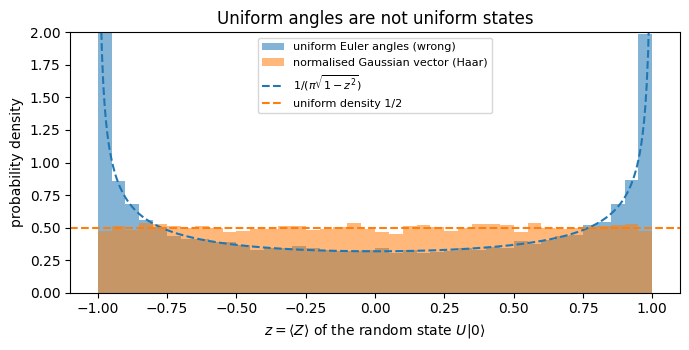
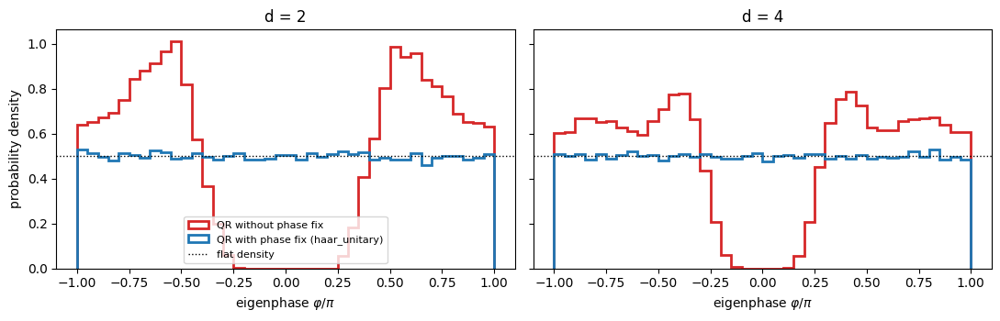
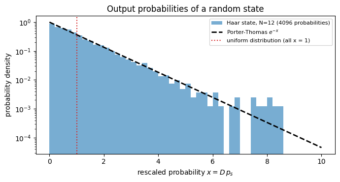
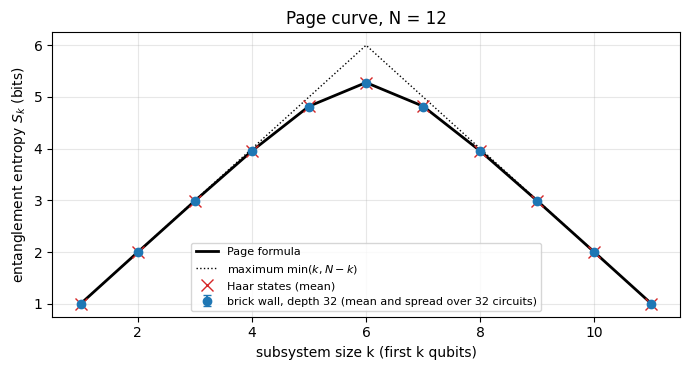
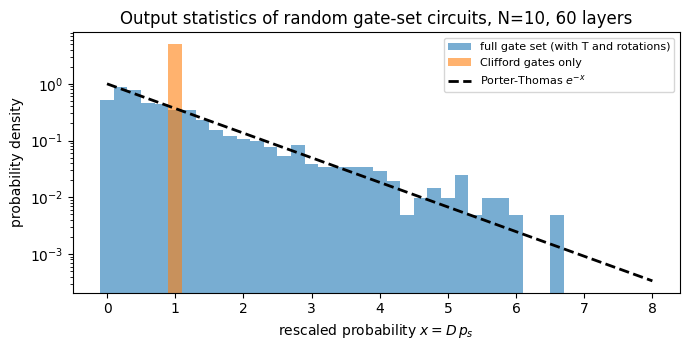
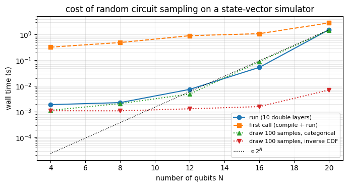
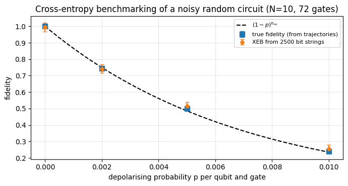

Quantum Many-Body Simulation — Chapter 4 — Digital quantum circuits
1. Introduction and motivation
What does a typical quantum state of \(N\) qubits look like? What does a generic interacting dynamics do to a simple initial state? How can one test a quantum processor on a task for which nobody knows the answer in advance? All three questions lead to the same tool: random unitaries.
Typical states. Draw a state “uniformly at random” from the Hilbert space and look at a small subsystem: it is almost maximally mixed, i.e. the state is almost maximally entangled (Page 1993). This is the cartoon picture of what chaotic many-body dynamics does to a state after a long time - it scrambles it - and it underlies modern explanations of why local observables of isolated quantum systems relax, as well as toy models of black holes.
Minimal models of quantum chaos. A circuit of random two-qubit gates arranged like bricks in a wall is the simplest “dynamics” that is local and unitary and has no other structure (no energy conservation, no symmetries). It reproduces the universal features of chaotic Hamiltonian evolution - linear growth of entanglement, saturation at the Page value - and is much easier to analyse (Nahum et al. 2017; Fisher et al. 2023).
Benchmarking quantum processors. The “quantum supremacy” experiments (Arute et al. 2019) ran random circuits on 53 superconducting qubits and compared the measured bit strings with a classical simulation through the linear cross-entropy benchmark (XEB). The statistical theory behind it is the Porter-Thomas distribution of the output probabilities of a random state.
Randomised measurement protocols. Randomised benchmarking, classical shadows (notebook 24) and many tomography schemes average over random unitaries - in practice over the finite Clifford group, which imitates the uniform distribution well enough.
Numerical practice. Random states and unitaries are the best test inputs for a simulator: they have no symmetry that could hide a bug.
Road map. Section 2 explains what “uniformly random” means for unitaries (the Haar measure) and shows a tempting but wrong way to sample. Section 3 constructs Haar-random states from Gaussian vectors, Section 4 Haar-random unitaries from the QR decomposition, including the subtle phase correction without which the result is wrong - we make the error visible. Section 5 derives the Porter-Thomas distribution. Section 6 builds random brick-wall circuits with vmap/scan and measures how entanglement grows and saturates. Section 7 constructs the 24-element single-qubit Clifford group and tests in which sense it is “as good as Haar”. Sections 8 and 9 are about random circuit sampling from a discrete gate set, its simulation cost, and cross-entropy benchmarking with and without noise.
What you will learn
Physics
the Haar measure as the unique unitarily invariant distribution; typical states are nearly maximally entangled (Page value) and their output probabilities are exponentially distributed (Porter-Thomas);
random circuits as minimal models of chaotic dynamics: linear entanglement growth, saturation depth \(\propto N\), anticoncentration;
Clifford gates: a finite group that reproduces Haar averages up to the third moment, but no further;
what the linear XEB measures and why it estimates the fidelity of a noisy device.
Numerical methods
sampling from the Haar measure: Gaussian vectors, QR decomposition with phase correction (Mezzadri);
statistical validation of a sampler: moments, histograms, Monte-Carlo error bars \(\propto 1/\sqrt M\);
frame potentials as a quantitative test of “how random” a set of unitaries is;
noisy circuits via quantum trajectories.
Implementation practice
explicit PRNG keys, jax.random.split, reproducible randomness; vmap over keys to draw thousands of samples;
“randomness is data, structure is static”: circuits stored as arrays of gate matrices (or gate indices) so that one compiled program runs every random circuit; lax.scan over layers;
timing of compile versus run; scaling \(O(2^N)\) per gate up to \(N=20\).
Every notebook of this course starts with the same cell. Choose where to run (DEVICE) and the floating-point precision (PRECISION): "double" = float64/complex128 (default, recommended for physics), "single" = float32/complex64 (half the memory, faster on consumer GPUs, but watch the round-off). All code below derives its dtypes from RDTYPE/CDTYPE and its check tolerances from TOL, so nothing else needs to change.
Code
# ==============================================================================# CONFIGURATION -- adapt to your hardware, then run the notebook top to bottom# ==============================================================================DEVICE ="auto"# "auto": use a GPU if JAX finds one, else CPU | "cpu" | "gpu"PRECISION ="double"# "double": float64/complex128 | "single": float32/complex64import osif DEVICE =="cpu": os.environ["JAX_PLATFORMS"] ="cpu"# must be set BEFORE jax is importedimport stringfrom functools import partialimport mathimport numpy as npimport jaximport jax.numpy as jnpfrom jax import lax# Precision is configurable: "double" = float64/complex128 (default; needed for long time evolutions and# tight validation), "single" = float32/complex64 (half the memory, faster on consumer GPUs).# In a notebook PRECISION is defined in the Configuration cell; for this module use the env var QE_PRECISION.PRECISION =globals().get("PRECISION", os.environ.get("QE_PRECISION", "double"))jax.config.update("jax_enable_x64", PRECISION =="double")RDTYPE = jnp.float64 if PRECISION =="double"else jnp.float32 # real dtypeCDTYPE = jnp.complex128 if PRECISION =="double"else jnp.complex64 # complex dtype of all states/operatorsTOL =1e-10if PRECISION =="double"else1e-4# tolerance for sanity checks (asserts)_LETTERS = string.ascii_letters # the 52 einsum index labels a-z, A-Zimport timeimport matplotlib.pyplot as pltif DEVICE =="gpu"and jax.default_backend() =="cpu":print("WARNING: DEVICE='gpu' requested but JAX found no GPU -- running on CPU.")print(f"JAX {jax.__version__} | backend: {jax.default_backend()} | devices: {jax.devices()}")print(f"precision: {PRECISION} -> real {RDTYPE.__name__}, complex {CDTYPE.__name__}, check tolerance TOL={TOL:g}")
JAX 0.11.0 | backend: cpu | devices: [CpuDevice(id=0)]
precision: double -> real float64, complex complex128, check tolerance TOL=1e-10
2. The Haar measure
2.1 Uniform = invariant
“Pick a random number” is meaningless until a distribution is specified, and “uniform” needs a notion of volume. For a point on a circle, uniform means: the distribution does not change when the circle is rotated. The same principle defines the uniform distribution on the group \(U(d)\) of \(d\times d\) unitary matrices:
The Haar measure is the (unique) probability distribution on \(U(d)\) that is invariant under multiplication by any fixed unitary \(V\): if \(U\) is Haar distributed, so are \(VU\) and \(UV\).
We quote existence and uniqueness without proof (it holds for every compact group, i.e. a group of matrices that is a closed and bounded set, like \(U(d)\)). Intuition: a Haar-random \(U\) has no preferred basis - whatever rotation \(V\) you apply before or after, the statistics are unchanged. For \(d=1\) the group is the circle \(\{e^{i\varphi}\}\) and the Haar measure is \(d\varphi/2\pi\).
Similarly a Haar-random state is \(U\lvert\psi_0\rangle\) for a fixed reference state \(\lvert\psi_0\rangle\) and Haar-random \(U\): the uniform distribution on the unit sphere of the Hilbert space. For one qubit this sphere is, up to the global phase, the Bloch sphere, and “uniform” has its everyday geometrical meaning: equal areas are equally likely.
2.2 A tempting mistake: uniform Euler angles
In notebook 09 we saw that every single-qubit gate is \(e^{i\alpha}R_z(\beta)R_y(\gamma)R_z(\delta)\). So why not draw the angles uniformly? Let us look at the state \(U\lvert0\rangle\). Its polar angle on the Bloch sphere is exactly \(\gamma\), so \(\langle Z\rangle=\cos\gamma\). If \(\gamma\) is uniform in \([0,\pi]\), the density of \(z=\cos\gamma\) is \(\frac{1}{\pi\sqrt{1-z^2}}\), which diverges at \(z=\pm1\): the states crowd around the poles. For the uniform distribution on a sphere, on the other hand, the area element is \(\sin\gamma\,d\gamma\,d\varphi = d(\cos\gamma)\,d\varphi\): \(z=\cos\gamma\) must be uniform in \([-1,1]\) (Archimedes’ “hat-box” theorem: slices of equal height have equal area). The angles of a parametrisation are in general not uniformly distributed - one needs the Jacobian.
The experiment below draws 20000 “naive” unitaries and compares the histogram of \(\langle Z\rangle\) with the correct sampler of Section 3. First the folded engine recap with the primitives from earlier notebooks.
Engine recap — the simulator primitives used in this notebook (click to expand)
# ==============================================================================# ENGINE RECAP: the functions of quantum_engine.py (SmoQ.jax) used in this notebook.# Each one is derived, with its mathematics and an independent check, in notebook 08b# (Chapter 3), 'Building the quantum simulator engine'.# States are rank-N tensors of shape (2,)*N; every operator acts through ONE einsum.# ==============================================================================# ----------------------------------------------------------------------------# 1. Elementary matrices: Paulis, Clifford generators, rotations# ----------------------------------------------------------------------------I2 = jnp.eye(2, dtype=CDTYPE)X = jnp.array([[0, 1], [1, 0]], dtype=CDTYPE)Y = jnp.array([[0, -1j], [1j, 0]], dtype=CDTYPE)Z = jnp.array([[1, 0], [0, -1]], dtype=CDTYPE)H = jnp.array([[1, 1], [1, -1]], dtype=CDTYPE) / jnp.sqrt(2.0) # Hadamard: Z-basis <-> X-basisS = jnp.array([[1, 0], [0, 1j]], dtype=CDTYPE) # phase gate, S^2 = ZSDG = S.conj().TT = jnp.array([[1, 0], [0, jnp.exp(1j* jnp.pi /4)]], dtype=CDTYPE) # pi/8 gate, T^2 = S (non-Clifford!)CNOT = jnp.array([[1, 0, 0, 0], [0, 1, 0, 0], [0, 0, 0, 1], [0, 0, 1, 0]], dtype=CDTYPE)CZ = jnp.diag(jnp.array([1, 1, 1, -1], dtype=CDTYPE))def rx(theta):"""Rotation about x: Rx(theta) = exp(-i theta X/2) = cos(theta/2) 1 - i sin(theta/2) X. Derivation: for any operator with P^2 = 1 the exponential series splits into even/odd parts, exp(-i a P) = cos(a) 1 - i sin(a) P. Here a = theta/2. `theta` may be a traced JAX scalar, so the gate is differentiable (jax.grad) and jit-able. """ c, s = jnp.cos(theta /2), jnp.sin(theta /2)return jnp.array([[c, -1j* s], [-1j* s, c]], dtype=CDTYPE)def ry(theta):"""Rotation about y: Ry(theta) = exp(-i theta Y/2) = [[cos, -sin], [sin, cos]](theta/2) (real matrix).""" c, s = jnp.cos(theta /2), jnp.sin(theta /2)return jnp.array([[c, -s], [s, c]], dtype=CDTYPE)def rz(theta):"""Rotation about z: Rz(theta) = exp(-i theta Z/2) = diag(e^{-i theta/2}, e^{+i theta/2}).""" e = jnp.exp(-0.5j* theta)return jnp.array([[e, 0], [0, jnp.conj(e)]], dtype=CDTYPE)# ----------------------------------------------------------------------------# 2. THE core primitive: a k-qubit operator acting on a tensor through ONE einsum# ----------------------------------------------------------------------------def apply_gate(psi, U, qubits):"""Apply a k-qubit operator U to the axes `qubits` of the tensor `psi`. MATH ---- One qubit (k=1), target q: psi'[s_0,..,a,..,s_{N-1}] = sum_b U[a,b] psi[s_0,..,b,..,s_{N-1}] Two qubits (k=2), targets (q1,q2); the 4x4 matrix is reshaped to U[a1,a2,b1,b2]: psi'[.., a1, .., a2, ..] = sum_{b1,b2} U[a1,a2,b1,b2] psi[.., b1, .., b2, ..] This IS the action of (1 x .. x U x .. x 1) -- written without ever building it. EINSUM TRANSLATION (generated automatically below) ------------------ N=3, q=1 : "db,abc->adc" d = new (output) index of qubit 1 N=4, q=(1,3) : "efbd,abcd->aecf" e,f = new indices of qubits 1 and 3 Recipe: label the axes of psi with letters a,b,c,...; give every target qubit a NEW letter (the next unused ones); U carries (new letters)+(old letters of the targets); the output is psi's labels with the target letters replaced by the new ones. IMPLEMENTATION NOTES -------------------- * reshape of U: (2^k,2^k) -> (2,)*2k. Row index = (a1..ak), column = (b1..bk), and the FIRST qubit in `qubits` is the most significant bit of the small matrix, i.e. it corresponds to the LEFT factor of kron(A,B). * `qubits` may be any distinct axes in any order: non-neighbouring gates cost the same. * U need not be unitary: projectors, Kraus operators and Hamiltonian terms reuse this. * psi may be ANY tensor with those axes of size 2: a state (rank N), a density tensor (rank 2N: ket axes 0..N-1, bra axes N..2N-1), ... COST O(2^k * 2^N) operations, O(2^N) memory (dense matrix: O(4^N) both). JAX `qubits` must be static Python ints (they define the einsum string); psi and U are traced, so the function can sit inside jit / grad / vmap / scan. """ qubits =tuple(int(q) for q in qubits) k, n =len(qubits), psi.ndim U = jnp.asarray(U, dtype=psi.dtype).reshape((2,) * (2* k)) # matrix -> rank-2k tensor inp =list(_LETTERS[:n]) # labels of psi's axes new = _LETTERS[n:n + k] # fresh labels for the outputs out = inp.copy()for a, q inzip(new, qubits): out[q] = a # target axes get the new labels sub =f"{''.join(new)}{''.join(inp[q] for q in qubits)},{''.join(inp)}->{''.join(out)}"return jnp.einsum(sub, U, psi)# ----------------------------------------------------------------------------# 3. State preparation# ----------------------------------------------------------------------------def zero_state(N):"""|00...0>: a rank-N tensor of zeros with a single 1 at index (0,0,...,0). JAX arrays are immutable: `.at[idx].set(v)` returns an updated COPY (functional style)."""return jnp.zeros((2,) * N, dtype=CDTYPE).at[(0,) * N].set(1.0)_KETS = {"0": [1, 0], "1": [0, 1], "+": [1, 1], "-": [1, -1], "r": [1, 1j], "l": [1, -1j]}def product_state(spec):"""Product state from a string, one character per qubit: product_state('01+-') = |0>|1>|+>|->. ('r','l' = the +1/-1 eigenstates of Y.) MATH psi[s_0,...,s_{N-1}] = v0[s_0] v1[s_1] ... v_{N-1}[s_{N-1}] EINSUM an outer product = einsum with NO summed index: "a,b,c->abc". A product state needs only 2N numbers; entanglement is what makes all 2^N necessary. """ vecs = [jnp.array(_KETS[c], dtype=CDTYPE) / jnp.linalg.norm(jnp.array(_KETS[c], dtype=CDTYPE))for c in spec] n =len(vecs) sub =",".join(_LETTERS[i] for i inrange(n)) +"->"+ _LETTERS[:n]return jnp.einsum(sub, *vecs)# ----------------------------------------------------------------------------# 4. Reduced density matrices & observables (matrix-free)# ----------------------------------------------------------------------------def rdm(psi, keep):"""Reduced density matrix of the qubits `keep` from a PURE state: rho_A = Tr_B |psi><psi|. MATH rho_A[a, a'] = sum_{b} psi[a, b] psi^*[a', b] (a: indices of A, b: of the rest B) EINSUM TRANSLATION N=3, keep=(0,): "abc,Abc->aA" with operands psi, psi^* * letters of B (b,c) appear in BOTH operands and not in the output -> summed = traced out * the kept axis gets a different letter in the second operand -> stays open (a and A) The full |psi><psi| (4^N numbers) is never formed; cost O(2^N 2^|A|). Returns a (2^|A|, 2^|A|) matrix with row/column order following `keep`. """ keep =tuple(int(q) for q in keep) n, k = psi.ndim, len(keep) a =list(_LETTERS[:n]) b = a.copy()for new, q inzip(_LETTERS[n:n + k], keep): b[q] = new sub =f"{''.join(a)},{''.join(b)}->{''.join(a[q] for q in keep)}{''.join(b[q] for q in keep)}"return jnp.einsum(sub, psi, jnp.conj(psi)).reshape(2** k, 2** k)# ----------------------------------------------------------------------------# 5. State characteristics: entropies, fidelity, negativity# ----------------------------------------------------------------------------def schmidt_values(psi, subsystem):"""Schmidt coefficients of the bipartition A|B with A = `subsystem`. MATH Group the tensor axes into a matrix M[(a),(b)] = psi[a,b] of shape (2^|A|, 2^|B|). Its SVD M = U diag(lambda) V^dag IS the Schmidt decomposition |psi> = sum_k lambda_k |u_k>_A |v_k>_B , rho_A has eigenvalues lambda_k^2. IMPLEMENTATION transpose (A axes first) -> reshape -> svd. No density matrix needed. """ A =tuple(int(q) for q in subsystem) B =tuple(q for q inrange(psi.ndim) if q notin A) M = jnp.transpose(psi, A + B).reshape(2**len(A), -1)return jnp.linalg.svd(M, compute_uv=False)def entanglement_entropy(psi, subsystem, base=2.0):"""Entanglement entropy S_A = -sum_k p_k log p_k with p_k = lambda_k^2 (squared Schmidt values). Product state: 0. Bell/GHZ across any cut: 1 bit. Random state: ~ |A| - 1/(2 ln2) 2^{|A|-|B|} (Page).""" p = jnp.clip(schmidt_values(psi, subsystem) **2, 1e-16, None)return-jnp.sum(p * jnp.log(p)) / jnp.log(base)def fidelity_pure(psi, phi):"""F = |<psi|phi>|^2 between two pure states."""return jnp.abs(jnp.vdot(psi, phi)) **2# ----------------------------------------------------------------------------# 6. Measurements (Born rule, collapse, sampling)# ----------------------------------------------------------------------------_BASIS_ROT = {"Z": I2, "X": H, "Y": H @ SDG} # U maps the eigenbasis of the Pauli to |0>,|1>: P = U^dag Z Udef sample_bitstrings(key, psi, shots, bases=None):"""Sample `shots` outcomes of measuring ALL qubits (no collapse bookkeeping needed). MATH p(s) = |psi[s]|^2 ; optional per-qubit bases string like 'XZY' rotates first. IMPLEMENTATION `jax.random.categorical` draws flat indices from log-probabilities; the bits are unpacked with shifts: s_q = (i >> (N-1-q)) & 1 (qubit 0 = most significant bit). Returns an int array of shape (shots, N). """ N = psi.ndimif bases isnotNone:for q, b inenumerate(bases): psi = apply_gate(psi, _BASIS_ROT[b], [q]) logp = jnp.log(jnp.clip(jnp.abs(psi.reshape(-1)) **2, 1e-300, None)) idx = jax.random.categorical(key, logp, shape=(shots,))return (idx[:, None] >> jnp.arange(N -1, -1, -1)[None, :]) &1# ----------------------------------------------------------------------------# 7. Noise channels (Kraus operators): density matrix and quantum-trajectory forms# ----------------------------------------------------------------------------def kraus_depolarizing(p):"""Depolarising channel rho -> (1-p) rho + (p/3)(X rho X + Y rho Y + Z rho Z). Kraus: sqrt(1-p) 1, sqrt(p/3) X, sqrt(p/3) Y, sqrt(p/3) Z. Bloch vector shrinks by 1 - 4p/3."""return jnp.stack([jnp.sqrt(1- p) * I2, jnp.sqrt(p /3) * X, jnp.sqrt(p /3) * Y, jnp.sqrt(p /3) * Z])def apply_kraus_mcwf(key, psi, kraus, qubits):"""Apply a channel to a PURE state stochastically (quantum trajectory / Monte-Carlo wave function). MATH choose branch m with probability p_m = ||K_m psi||^2 = Tr(K_m rho_A K_m^dag) then |psi> -> K_m|psi> / sqrt(p_m). Averaging |psi><psi| over many trajectories gives exactly sum_m K_m rho K_m^dag. WHY memory O(2^N) instead of O(4^N): open systems at the price of closed ones (times #trajectories, which are embarrassingly parallel -> jax.vmap over keys). IMPLEMENTATION probabilities come from the SMALL reduced density matrix (einsum "mab,bc,mac->m"); `K[m]` with a traced integer m is a gather, so everything stays jit-compatible. """ K = jnp.asarray(kraus, dtype=CDTYPE) r = rdm(psi, qubits) probs = jnp.real(jnp.einsum("mab,bc,mac->m", K, r, jnp.conj(K))) m = jax.random.categorical(key, jnp.log(jnp.clip(probs, 1e-300, None))) psi = apply_gate(psi, K[m], qubits)return psi / jnp.linalg.norm(psi)# ----------------------------------------------------------------------------# 9. Time evolution: TEBD / Trotter-Suzuki, Chebyshev, Krylov, exact# ----------------------------------------------------------------------------def apply_gates(psi, gates):"""Apply a list [(qubits, U), ...] in order -- a quantum circuit is a Python loop over einsums. Under `jax.jit` the loop is unrolled at trace time and XLA fuses it into one program."""for qubits, U in gates: psi = apply_gate(psi, U, qubits)return psi
Code
# ==============================================================================# STEP 1: naive "uniform Euler angles" versus Haar: distribution of <Z> for U|0># ==============================================================================M_SAMPLES =20000# number of random unitaries / statesdef naive_random_gate(key):"""WRONG sampler: Rz(beta) Ry(gamma) Rz(delta) with beta, delta in [0,2pi), gamma in [0,pi] all uniform.""" b, g, d = jax.random.uniform(key, (3,)) * jnp.array([2* jnp.pi, jnp.pi, 2* jnp.pi])return rz(b) @ ry(g) @ rz(d)def z_of_first_column(U):"""<Z> of the state U|0> = first column of U: |U_00|^2 - |U_10|^2."""return jnp.abs(U[0, 0]) **2- jnp.abs(U[1, 0]) **2def gaussian_state_1q(key):"""Correct sampler (derived in Section 3): normalised complex Gaussian vector.""" k1, k2 = jax.random.split(key) v = jax.random.normal(k1, (2,)) +1j* jax.random.normal(k2, (2,))return v / jnp.linalg.norm(v)keys = jax.random.split(jax.random.PRNGKey(0), M_SAMPLES) # one independent key per samplez_naive = jax.vmap(lambda k: z_of_first_column(naive_random_gate(k)))(keys)z_haar = jax.vmap(lambda k: z_of_first_column(gaussian_state_1q(k)[:, None]))(keys)fig, ax = plt.subplots(figsize=(7, 3.6))bins = np.linspace(-1, 1, 41)ax.hist(np.asarray(z_naive), bins=bins, density=True, alpha=0.55, label="uniform Euler angles (wrong)")ax.hist(np.asarray(z_haar), bins=bins, density=True, alpha=0.55, label="normalised Gaussian vector (Haar)")zz = np.linspace(-0.995, 0.995, 400)ax.plot(zz, 1/ (np.pi * np.sqrt(1- zz **2)), "C0--", lw=1.5, label=r"$1/(\pi\sqrt{1-z^2})$")ax.axhline(0.5, color="C1", ls="--", lw=1.5, label="uniform density 1/2")ax.set_ylim(0, 2.0)ax.set_xlabel(r"$z=\langle Z\rangle$ of the random state $U|0\rangle$")ax.set_ylabel("probability density")ax.set_title("Uniform angles are not uniform states")ax.legend(fontsize=8)plt.tight_layout()plt.show()print(f"variance of z: naive = {float(jnp.var(z_naive)):.4f} (arcsine law: 1/2), "f"Haar = {float(jnp.var(z_haar)):.4f} (uniform on [-1,1]: 1/3)")

variance of z: naive = 0.5003 (arcsine law: 1/2), Haar = 0.3351 (uniform on [-1,1]: 1/3)
The naive sampler follows the arcsine law and over-represents states near the poles \(\lvert0\rangle,\lvert1\rangle\) (variance of \(z\) close to \(1/2\)), the correct sampler gives a flat histogram (variance close to \(1/3\)). Any average computed with the naive sampler - e.g. the mean entanglement generated by a “random” gate - would be biased.
JAX practice. JAX has no global random state. Every random function takes an explicit key; jax.random.split(key, M) produces \(M\) statistically independent keys, and vmap over these keys draws \(M\) samples in parallel. The same key always gives the same numbers: the notebook is reproducible bit by bit, and each sample can be regenerated in isolation for debugging (notebook 01).
3. Haar-random states from Gaussian vectors
Claim. Let \(g=(g_1,\dots,g_D)\) have independent complex Gaussian entries (real and imaginary parts independent normal variables of equal variance). Then \(\lvert\psi\rangle = g/\lVert g\rVert\) is Haar distributed.
Proof. The joint probability density of \(g\) is \(\prod_i \frac{1}{\pi\sigma^2}e^{-|g_i|^2/\sigma^2}\propto e^{-\lVert g\rVert^2/\sigma^2}\): it depends on \(g\) only through its norm. A unitary \(V\) preserves the norm (and has unit Jacobian - as a real linear map on \(\mathbb R^{2D}\) its determinant is \(\lvert\det V\rvert^2=1\)), so \(Vg\) has the same density as \(g\). Hence the direction \(g/\lVert g\rVert\) has a distribution on the unit sphere that is invariant under all unitaries. Any two unit vectors are related by some unitary, so the sphere is a single orbit of \(U(D)\), and on a single orbit there is only one invariant probability measure: the uniform one. \(\blacksquare\)
This is the engine function haar_state (the state is returned as a rank-\(N\) tensor). The argument works because the Gaussian is the distribution whose product form is rotation invariant. Normalising a vector of uniform random numbers does not give a uniform direction (Exercise 1).
Code
# ==============================================================================# Functions of quantum_engine.py derived in this notebook# ==============================================================================# ----------------------------------------------------------------------------# 3. State preparation# ----------------------------------------------------------------------------def haar_state(key, N):"""Haar-random pure state: a complex Gaussian vector, normalised. (The Gaussian measure is unitarily invariant, so the direction is uniformly distributed.) `key` is an explicit JAX PRNG key -- same key, same state: reproducible science.""" k1, k2 = jax.random.split(key) v = jax.random.normal(k1, (2,) * N) +1j* jax.random.normal(k2, (2,) * N)return (v / jnp.linalg.norm(v)).astype(CDTYPE)
Checkpoints. For a Haar state in dimension \(D=2^N\) the probabilities \(p_i=\lvert\psi_i\rvert^2\) satisfy (we derive the full distribution in Section 5)
where \(\mathbb 1\) is the \(D\times D\) identity matrix. The last statement says that the average over all pure states is the maximally mixed state - complete ignorance. We test these with \(M\) samples; a Monte-Carlo average has a statistical error \(\sigma/\sqrt M\), so the checks are formulated as deviations in units of the standard error and do not use TOL.
norms: max |1 - <psi|psi>| = 6.7e-16
E[p_0] = 0.12540 +- 0.00078 exact 0.12500 (0.5 standard errors)
E[p_0^2] = 0.02784 +- 0.00033 exact 0.02778 (0.2 standard errors)
average state: max |E[|psi><psi|] - 1/D| = 0.0015 (expected statistical scatter ~ 1/(D sqrt(M)) = 0.0009)
The sample moments agree with the exact values within the standard error, and the averaged projector is the maximally mixed state up to statistical scatter (the printed number is the largest of the 64 matrix elements of the deviation, hence somewhat above the typical scatter of a single element).
4. Haar-random unitaries from the QR decomposition
4.1 The recipe and why it needs a phase fix
A unitary matrix is a set of \(d\) orthonormal vectors. A natural idea: take \(d\) random Gaussian vectors - the columns of a Ginibre matrix\(G\) with independent complex Gaussian entries - and orthonormalise them by the Gram-Schmidt procedure. In matrix language Gram-Schmidt is the QR decomposition
\[ G = QR,\qquad Q \text{ unitary},\quad R \text{ upper triangular}, \]
where column \(j\) of \(Q\) is column \(j\) of \(G\) made orthogonal to the previous columns and normalised, and \(R\) stores the coefficients. Is \(Q\) Haar distributed? The argument would go like this: the Ginibre ensemble is invariant, \(VG\sim G\) (same proof as in Section 3, applied to every column). If \(G=QR\) then \(VG=(VQ)R\) is a QR decomposition of \(VG\), so “\(Q(VG) = V\,Q(G)\)”, and the distribution of \(Q\) is invariant under left multiplication: Haar.
The gap in the argument is the word “a” QR decomposition. The QR decomposition is not unique: for any diagonal matrix of phases \(\Lambda=\mathrm{diag}(e^{i\phi_1},\dots,e^{i\phi_d})\),
\[ G = QR = (Q\Lambda)(\Lambda^{\dagger}R) \]
is another one. The map \(G\mapsto Q\) is only well defined after fixing a convention, and the argument “\(Q(VG)=VQ(G)\)” is valid only if the convention does not depend on the basis. The convention \(R_{jj}>0\) (the one Gram-Schmidt produces) has this property: the condition constrains \(R\) alone, and replacing \(G\) by \(VG\) leaves \(R\) unchanged, so the selected \(Q\) simply becomes \(VQ\). Numerical libraries do something else: LAPACK’s Householder algorithm returns a real diagonal of \(R\) whose signs depend on the entries of \(G\) in a basis-dependent way. The resulting \(Q\) is not Haar distributed.
Two details are worth separating here, because the first one alone would be harmless. If the phases \(\Lambda\) were drawn independently of \(G\), then \(Q=U\Lambda^\dagger\) with \(U\) Haar would still be Haar, since the Haar measure is invariant under multiplication by any fixed unitary. The damage is done by the correlation: the sign is a function of \(G\), hence of \(Q\). Concretely, LAPACK’s first Householder step returns \(R_{11}=-\mathrm{sign}(\mathrm{Re}\,G_{11})\lVert G_{\cdot1}\rVert\) and therefore a first column \(Q_{\cdot1}=G_{\cdot1}/R_{11}\) whose leading entry has \(\mathrm{Re}\,Q_{11}=-\lvert\mathrm{Re}\,G_{11}\rvert/\lVert G_{\cdot1}\rVert\le0\) - a hard, basis-dependent constraint that a Haar-random matrix violates half of the time. The cure (Mezzadri 2007) is one line:
\[ \Lambda = \mathrm{diag}\Big(\frac{R_{jj}}{|R_{jj}|}\Big),\qquad U = Q\Lambda , \]
which converts the library’s decomposition into the one with positive diagonal \(R' = \Lambda^\dagger R\). In code, multiplying \(Q\) from the right by a diagonal matrix is a broadcast over columns: Q * ph[None, :].
Code
# ==============================================================================# Functions of quantum_engine.py derived in this notebook# ==============================================================================# ----------------------------------------------------------------------------# 12. Random unitaries, Clifford group, brick-wall circuits# ----------------------------------------------------------------------------def haar_unitary(key, d):"""Haar-random d x d unitary (Mezzadri's recipe): QR-decompose a complex Ginibre matrix and fix the phases of R's diagonal -- without the phase fix the distribution is NOT Haar.""" k1, k2 = jax.random.split(key) G = (jax.random.normal(k1, (d, d)) +1j* jax.random.normal(k2, (d, d))) / jnp.sqrt(2.0) Q, R = jnp.linalg.qr(G) ph = jnp.diagonal(R) / jnp.abs(jnp.diagonal(R))return Q * ph[None, :]
4.2 Making the error visible: eigenphase statistics
A sharp test uses the eigenvalues \(e^{i\varphi_k}\) of \(U\). For Haar-random unitaries the density of eigenphases is flat, \(\rho(\varphi)=1/2\pi\): if \(U\) is Haar then so is \(e^{i\alpha}U\), which shifts all eigenphases by \(\alpha\), so no phase can be preferred. We also check \(\mathbb E\lvert\mathrm{Tr}\,U\rvert^2=\sum_{i,j}\mathbb E[U_{ii}U_{jj}^*]=1\) for every \(d\): the terms \(i\neq j\) vanish because multiplying row \(i\) by a phase is a Haar-invariant operation that changes \(U_{ii}\) but not \(U_{jj}\), and the \(d\) diagonal terms are \(\mathbb E\lvert U_{ii}\rvert^2=1/d\) (Section 4.3).
We draw 20000 matrices of size \(d=2\) and \(d=4\) with and without the phase fix (vmap over keys), and compute the eigenvalues with NumPy (the non-Hermitian eigenvalue solver is one of the few routines that JAX offers on CPU only).
Code
# ==============================================================================# STEP 2: QR with and without the phase fix -- eigenphase histograms# ==============================================================================def qr_without_fix(key, d):"""Q factor of a Ginibre matrix, as returned by the library. NOT Haar distributed!""" k1, k2 = jax.random.split(key) G = (jax.random.normal(k1, (d, d)) +1j* jax.random.normal(k2, (d, d))) / jnp.sqrt(2.0) Q, R = jnp.linalg.qr(G)return Q, jnp.diagonal(R)keys = jax.random.split(jax.random.PRNGKey(2), M_SAMPLES)fig, axes = plt.subplots(1, 2, figsize=(11, 3.6), sharey=True)for ax, d inzip(axes, (2, 4)): Q_raw, R_diag = jax.vmap(lambda k: qr_without_fix(k, d))(keys) U_haar = jax.vmap(lambda k: haar_unitary(k, d))(keys)print(f"d={d} library QR: max |Im R_jj| = {float(jnp.max(jnp.abs(jnp.imag(R_diag)))):.1e}, "f"fraction of negative R_jj = {float(jnp.mean(jnp.real(R_diag) <0)):.3f} <- real, but not positive")for U_set, label, color in ((Q_raw, "QR without phase fix", "C3"), (U_haar, "QR with phase fix (haar_unitary)", "C0")): U_np = np.asarray(U_set) phases = np.angle(np.linalg.eigvals(U_np)).ravel() tr2 = np.abs(np.trace(U_np, axis1=1, axis2=2)) **2 ax.hist(phases / np.pi, bins=40, range=(-1, 1), density=True, histtype="step", lw=2, color=color, label=label) z_tr = (tr2.mean() -1) / (tr2.std() / np.sqrt(M_SAMPLES)) # deviation from Haar in standard errorsprint(f"d={d}{label:34s}: E|Tr U|^2 = {tr2.mean():.3f} +- {tr2.std() / np.sqrt(M_SAMPLES):.3f} (Haar: 1, {z_tr:+.0f} SE),"f" smallest |phi|/pi among {phases.size} eigenphases = {np.abs(phases).min() / np.pi:.4f}")assertabs(z_tr) <5if U_set is U_haar else z_tr >20# the sampler without the fix must fail ax.axhline(0.5, color="k", ls=":", lw=1, label="flat density") ax.set_xlabel(r"eigenphase $\varphi/\pi$") ax.set_title(f"d = {d}")axes[0].set_ylabel("probability density")axes[0].legend(fontsize=8, loc="lower center")plt.tight_layout()plt.show()
d=2 library QR: max |Im R_jj| = 0.0e+00, fraction of negative R_jj = 0.499 <- real, but not positive
d=2 QR without phase fix : E|Tr U|^2 = 1.352 +- 0.008 (Haar: 1, +46 SE), smallest |phi|/pi among 40000 eigenphases = 0.2428
d=2 QR with phase fix (haar_unitary) : E|Tr U|^2 = 1.001 +- 0.007 (Haar: 1, +0 SE), smallest |phi|/pi among 40000 eigenphases = 0.0000
d=4 library QR: max |Im R_jj| = 0.0e+00, fraction of negative R_jj = 0.498 <- real, but not positive
d=4 QR without phase fix : E|Tr U|^2 = 1.851 +- 0.009 (Haar: 1, +90 SE), smallest |phi|/pi among 80000 eigenphases = 0.1151
d=4 QR with phase fix (haar_unitary) : E|Tr U|^2 = 0.999 +- 0.007 (Haar: 1, -0 SE), smallest |phi|/pi among 80000 eigenphases = 0.0000

The library’s \(R\) has a real diagonal, but about half of its entries are negative. Without the fix the eigenphase density is grossly non-uniform: there is a hard gap around \(\varphi=0\) - among the \(40000\) eigenphases at \(d=2\) not one comes closer to \(0\) than \(0.24\pi\), among the \(80000\) at \(d=4\) none closer than \(0.12\pi\), so an eigenvalue near \(+1\) never occurs - and \(\mathbb E\lvert\mathrm{Tr}U\rvert^2\) misses 1 by 46 and 90 standard errors. That is the constraint \(\mathrm{Re}\,Q_{11}\le0\) of Section 4.1 showing up in the spectrum. With the fix the histogram is flat within statistical noise, the smallest eigenphase found is \(0.0000\pi\) to the printed precision, and \(\mathbb E\lvert\mathrm{Tr}U\rvert^2=1\) within the error bar. Both samplers return perfectly unitary matrices; a test of unitarity alone would never have revealed the problem.
Common pitfall. “It is unitary and looks random” is not a validation of a random-unitary sampler. Test statistical properties with known exact values that are sensitive to phases (\(\mathbb E\lvert\mathrm{Tr}\,U\rvert^2\), eigenphase density). The same warning applies to scipy.linalg.qr, numpy.linalg.qr and their analogues in every language.
Numerical practice. It is tempting to code the Gram-Schmidt procedure by hand, since it delivers \(R_{jj}>0\) with no phase fix at all, but it is numerically inferior. Measuring the departure from orthogonality of the computed \(Q\) by \(\lVert \mathbb 1-Q^\dagger Q\rVert\), classical Gram-Schmidt gives \(O(\varepsilon\,\kappa^2)\) and the modified variant \(O(\varepsilon\,\kappa)\), where \(\varepsilon\) is the machine epsilon and \(\kappa\) the condition number (Giraud et al. 2005, who also recall Björck’s bound for the modified variant), while the Householder algorithm used by the libraries (Numerical Recipes, 3rd ed., Section 2.10) gives \(O(\varepsilon)\) whatever \(\kappa\) (Higham 2002, Chapter 19). For a Ginibre matrix \(\kappa\) is modest and all three would do; the general rule is to call the library and repair the convention afterwards.
4.3 More checkpoints: unitarity and the moments of matrix elements
Since the first column of a Haar unitary is a Haar state, the moments of Section 3 carry over to every matrix element: \(\mathbb E\lvert U_{ij}\rvert^2=1/d\) and \(\mathbb E\lvert U_{ij}\rvert^4=2/(d(d+1))\). We also check unitarity for \(d=2,4,8\), i.e. one-, two- and three-qubit gates, and apply an \(8\times8\) Haar unitary to three non-adjacent qubits of a register.
Code
# ==============================================================================# CHECKPOINT: unitarity, moments of |U_ij|^2, and a 3-qubit Haar gate applied through apply_gate# ==============================================================================for d in (2, 4, 8): U_set = jax.vmap(lambda k: haar_unitary(k, d))(jax.random.split(jax.random.PRNGKey(3), 5000)) unit_err =float(jnp.max(jnp.abs(jnp.einsum("mji,mjk->mik", U_set.conj(), U_set) - jnp.eye(d)))) # U^dag U - 1 a2 = jnp.abs(U_set[:, 0, 1]) **2 m1, s1 =float(jnp.mean(a2)), float(jnp.std(a2) / np.sqrt(5000)) m2, s2 =float(jnp.mean(a2 **2)), float(jnp.std(a2 **2) / np.sqrt(5000))print(f"d={d}: |U^dag U - 1|_max = {unit_err:.1e} | E|U_01|^2 = {m1:.4f}+-{s1:.4f} (exact {1/ d:.4f}) | "f"E|U_01|^4 = {m2:.4f}+-{s2:.4f} (exact {2/ (d * (d +1)):.4f})")assert unit_err <100* TOL andabs(m1 -1/ d) <5* s1 andabs(m2 -2/ (d * (d +1))) <5* s2psi = apply_gate(zero_state(6), haar_unitary(jax.random.PRNGKey(4), 8), [0, 2, 5]) # k = 3, non-adjacent qubitsprint(f"3-qubit Haar gate on qubits (0,2,5) of a 6-qubit register: norm = {float(jnp.linalg.norm(psi)):.12f}")print("entanglement entropy of qubit 1 (untouched) with the rest:", f"{float(entanglement_entropy(psi, [1])):.2e} bit")
3-qubit Haar gate on qubits (0,2,5) of a 6-qubit register: norm = 1.000000000000
entanglement entropy of qubit 1 (untouched) with the rest: 5.32e-15 bit
All matrices are unitary to rounding, the second and fourth moments agree with \(1/d\) and \(2/(d(d+1))\) within two standard errors, and a three-qubit random gate acts on arbitrary axes of the state tensor while leaving the other qubits in a product state (entropy 0). The moments of \(\lvert U_{ij}\rvert\) cannot detect a missing phase fix, since \(Q\) and \(Q\Lambda\) have the same moduli; that test belongs to Section 4.2.
Numerical practice. A Haar unitary on \(N\) qubits costs \(O(8^N)\) to generate (QR of a \(2^N\times2^N\) matrix) and \(4^N\) numbers to store. If you need a Haar-random state, never generate a unitary: haar_state costs \(O(2^N)\). If you need scrambling dynamics on many qubits, use circuits of small random gates (Section 6).
5. The Porter-Thomas distribution
Measure a Haar-random state in the computational basis. The probability of the bit string \(s\) is \(p_s=\lvert\psi_s\rvert^2\). How are these \(D=2^N\) numbers distributed?
Derivation. Use the Gaussian construction \(\psi_s=g_s/\lVert g\rVert\) and normalise the Gaussians such that \(\mathbb E\lvert g_s\rvert^2=1\), i.e. real and imaginary parts have variance \(1/2\).
\(w=\lvert g_s\rvert^2 = (\mathrm{Re}\,g_s)^2+(\mathrm{Im}\,g_s)^2\). In polar coordinates the Gaussian density \(\frac1\pi e^{-r^2}\,r\,dr\,d\phi\) becomes, with \(w=r^2\) and \(dw=2r\,dr\), simply \(e^{-w}dw\): \(\lvert g_s\rvert^2\) is exponentially distributed with mean 1.
The norm \(\lVert g\rVert^2=\sum_{s}\lvert g_s\rvert^2\) is a sum of \(D\) such variables: mean \(D\), standard deviation \(\sqrt D\). For \(D\gg1\) it is sharply concentrated, \(\lVert g\rVert^2\approx D\).
Here \(\rho\) is a probability density: \(\rho(x)\,dx\) is the probability that \(Dp\) falls in \([x,x+dx]\). The exact finite-\(D\) law for a single probability, which we quote, is the density \(\rho_D(p)=(D-1)(1-p)^{D-2}\) on \(p\in[0,1]\) - a Beta distribution with parameters \((1,D-1)\), whose moments \(\mathbb E[p]=1/D\) and \(\mathbb E[p^2]=2/(D(D+1))\) are exactly the ones checked in Section 3. Substituting \(p=x/D\) gives \(\frac{D-1}{D}(1-x/D)^{D-2}\to e^{-x}\): the exponential is the \(D\to\infty\) limit. The name comes from nuclear physics: Porter and Thomas (1956) described the fluctuations of neutron resonance widths by chi-squared distributions, an early signature of quantum chaos. The exponential law is the member with two degrees of freedom (complex amplitudes); the neutron widths, with real amplitudes, follow the member with one degree of freedom.
Consequences: the output distribution of a random state is far from uniform. A fraction \(1-e^{-1}\approx63\%\) of the bit strings is less likely than uniform (\(x<1\)), a few are much more likely. The second moment is \(\mathbb E[x^2]=2\), so the collision probability is \(\sum_sp_s^2\approx 2/D\), twice that of the uniform distribution (exactly: \(2/(D+1)\)). Remember the quantity \(D\sum_sp_s^2\): it is 1 for the uniform distribution, 2 for Porter-Thomas and \(D\) for a basis state; it will serve as our “speckle contrast”.
The largest probability. Treating the \(D\) variables \(x_s\) as independent exponentials,
a Gumbel distribution centred at \(\ln D\). Its mean is \(\ln D+\gamma\) with \(\gamma=0.5772\) (Euler’s constant) and its standard deviation is \(\pi/\sqrt6\approx1.28\), independent of \(D\). The most likely bit string therefore has a probability of order \((\ln D)/D\): larger than the uniform \(1/D\) only by a logarithmic factor. A random state spreads its weight over the whole Hilbert space; it is anticoncentrated.
Code
# ==============================================================================# STEP 3: Porter-Thomas distribution of the output probabilities of a Haar state (N = 12)# ==============================================================================N_pt =12D_pt =2** N_ptpsi_haar = haar_state(jax.random.PRNGKey(5), N_pt)x_haar = np.asarray(D_pt * jnp.abs(psi_haar.reshape(-1)) **2) # D * p_s for all 4096 bit stringsfig, ax = plt.subplots(figsize=(7, 3.8))ax.hist(x_haar, bins=50, range=(0, 10), density=True, alpha=0.6, label=f"Haar state, N={N_pt} ({D_pt} probabilities)")xx = np.linspace(0, 10, 200)ax.plot(xx, np.exp(-xx), "k--", lw=2, label=r"Porter-Thomas $e^{-x}$")ax.axvline(1.0, color="C3", lw=1.5, ls=":", label="uniform distribution (all x = 1)")ax.set_yscale("log")ax.set_xlabel(r"rescaled probability $x = D\,p_s$")ax.set_ylabel("probability density")ax.set_title("Output probabilities of a random state")ax.legend(fontsize=8)plt.tight_layout()plt.show()print(f"fraction of bit strings with p < 1/D : {np.mean(x_haar <1):.3f} (1 - 1/e = {1- np.exp(-1):.3f})")print(f"D * sum_s p_s^2 : {np.mean(x_haar **2):.3f} (2D/(D+1) = {2* D_pt / (D_pt +1):.3f})")EULER_GAMMA =0.5772156649015329print(f"largest probability : {x_haar.max():.2f}/D "f"(Gumbel: mean ln D + gamma = {np.log(D_pt) + EULER_GAMMA:.2f}, spread pi/sqrt(6) = {np.pi / np.sqrt(6):.2f})")

fraction of bit strings with p < 1/D : 0.638 (1 - 1/e = 0.632)
D * sum_s p_s^2 : 2.013 (2D/(D+1) = 2.000)
largest probability : 8.49/D (Gumbel: mean ln D + gamma = 8.89, spread pi/sqrt(6) = 1.28)
On the logarithmic scale the histogram is a straight line over three decades: the exponential law. About 63% of the bit strings are less probable than uniform, the collision probability is twice the uniform value, and the most likely bit string is only about \(\ln D\) times more probable than average - the observed maximum sits within one Gumbel standard deviation of the predicted mean \(\ln D+\gamma\). The distribution is spread over the whole Hilbert space (it is anticoncentrated) and yet it has a characteristic “speckle” structure, like laser light scattered from a rough surface. It is this structure that cross-entropy benchmarking exploits (Section 9).
6. Random brick-wall circuits: how entanglement is born
6.1 The model
A Haar unitary on all \(N\) qubits is a mathematical idealisation: generic \(2^N\times2^N\) unitaries need exponentially many elementary gates. Physical dynamics is local. The minimal local model is the brick-wall circuit: in even layers Haar-random two-qubit gates act on the bonds \((0,1),(2,3),\dots\), in odd layers on \((1,2),(3,4),\dots\); every gate is drawn independently. One layer is exactly the structure of one half Trotter step of a nearest-neighbour Hamiltonian (notebook 09, Section 9) - with the interaction replaced by “anything”.
The engine provides a compact implementation, brickwall(key, psi, depth), which draws and applies the gates layer by layer in a Python loop:
Code
# ==============================================================================# Functions of quantum_engine.py derived in this notebook# ==============================================================================# ----------------------------------------------------------------------------# 2. THE core primitive: a k-qubit operator acting on a tensor through ONE einsum# ----------------------------------------------------------------------------def apply_gate(psi, U, qubits):"""Apply a k-qubit operator U to the axes `qubits` of the tensor `psi`. MATH ---- One qubit (k=1), target q: psi'[s_0,..,a,..,s_{N-1}] = sum_b U[a,b] psi[s_0,..,b,..,s_{N-1}] Two qubits (k=2), targets (q1,q2); the 4x4 matrix is reshaped to U[a1,a2,b1,b2]: psi'[.., a1, .., a2, ..] = sum_{b1,b2} U[a1,a2,b1,b2] psi[.., b1, .., b2, ..] This IS the action of (1 x .. x U x .. x 1) -- written without ever building it. EINSUM TRANSLATION (generated automatically below) ------------------ N=3, q=1 : "db,abc->adc" d = new (output) index of qubit 1 N=4, q=(1,3) : "efbd,abcd->aecf" e,f = new indices of qubits 1 and 3 Recipe: label the axes of psi with letters a,b,c,...; give every target qubit a NEW letter (the next unused ones); U carries (new letters)+(old letters of the targets); the output is psi's labels with the target letters replaced by the new ones. IMPLEMENTATION NOTES -------------------- * reshape of U: (2^k,2^k) -> (2,)*2k. Row index = (a1..ak), column = (b1..bk), and the FIRST qubit in `qubits` is the most significant bit of the small matrix, i.e. it corresponds to the LEFT factor of kron(A,B). * `qubits` may be any distinct axes in any order: non-neighbouring gates cost the same. * U need not be unitary: projectors, Kraus operators and Hamiltonian terms reuse this. * psi may be ANY tensor with those axes of size 2: a state (rank N), a density tensor (rank 2N: ket axes 0..N-1, bra axes N..2N-1), ... COST O(2^k * 2^N) operations, O(2^N) memory (dense matrix: O(4^N) both). JAX `qubits` must be static Python ints (they define the einsum string); psi and U are traced, so the function can sit inside jit / grad / vmap / scan. """ qubits =tuple(int(q) for q in qubits) k, n =len(qubits), psi.ndim U = jnp.asarray(U, dtype=psi.dtype).reshape((2,) * (2* k)) # matrix -> rank-2k tensor inp =list(_LETTERS[:n]) # labels of psi's axes new = _LETTERS[n:n + k] # fresh labels for the outputs out = inp.copy()for a, q inzip(new, qubits): out[q] = a # target axes get the new labels sub =f"{''.join(new)}{''.join(inp[q] for q in qubits)},{''.join(inp)}->{''.join(out)}"return jnp.einsum(sub, U, psi)# ----------------------------------------------------------------------------# 12. Random unitaries, Clifford group, brick-wall circuits# ----------------------------------------------------------------------------def haar_unitary(key, d):"""Haar-random d x d unitary (Mezzadri's recipe): QR-decompose a complex Ginibre matrix and fix the phases of R's diagonal -- without the phase fix the distribution is NOT Haar.""" k1, k2 = jax.random.split(key) G = (jax.random.normal(k1, (d, d)) +1j* jax.random.normal(k2, (d, d))) / jnp.sqrt(2.0) Q, R = jnp.linalg.qr(G) ph = jnp.diagonal(R) / jnp.abs(jnp.diagonal(R))return Q * ph[None, :]def brickwall(key, psi, depth, periodic=False):"""Random brick-wall circuit: layers of Haar-random 2-qubit gates on even bonds, then odd bonds, ... Depth ~ N turns a product state into a (nearly) Haar-random state: volume-law entanglement (Page).""" N = psi.ndimfor layer inrange(depth): bonds = [(i, i +1) for i inrange(layer %2, N -1, 2)]if periodic and N %2==0and layer %2==1: bonds.append((N -1, 0)) key, *ks = jax.random.split(key, len(bonds) +1)for k, b inzip(ks, bonds): psi = apply_gate(psi, haar_unitary(k, 4), b)return psi
6.2 Randomness is data, structure is static
For the experiments below we want (i) observables after every layer, (ii) averages over many circuit realisations and (iii) later the same circuit with and without noise. A design that serves all three separates generation from execution:
a circuit is stored as data: two arrays of gate matrices, U_even[l, j] and U_odd[l, j] of shapes \((L, n_{\rm bonds}, 4, 4)\), for \(L\) double layers (even layer followed by odd layer). Drawing them is one vmap of haar_unitary over a batch of keys;
execution is a lax.scan over the leading axis \(L\): the body applies one double layer - its structure (which bonds) is static Python, its matrices are the traced slices U_even[l], U_odd[l]. The program is compiled once and is valid for every random circuit of that shape;
vmap over circuit keys then runs a whole ensemble of circuits in parallel.
The observable recorded after each of the \(2L\) layers is a small vector: the half-chain entanglement entropy (from the singular values of the state reshaped into a \(2^{N/2}\times2^{N/2}\) matrix, notebook 06) and the speckle contrast \(D\sum_sp_s^2\) of Section 5.
Code
# ==============================================================================# STEP 4: brick-wall circuits as arrays of gates; execution = scan over double layers# ==============================================================================def random_brickwall_circuit(key, N, n_double):"""Draw the gates of a brick-wall circuit with 2*n_double layers. Returns (U_even, U_odd) with shapes (n_double, N//2, 4, 4) and (n_double, (N-1)//2, 4, 4). JAX one vmap of `haar_unitary` over a batch of independent keys -- no Python loop over gates. """ n_even, n_odd = N //2, (N -1) //2 k_even, k_odd = jax.random.split(key) draw = jax.vmap(lambda k: haar_unitary(k, 4)) U_even = draw(jax.random.split(k_even, n_double * n_even)).reshape(n_double, n_even, 4, 4) U_odd = draw(jax.random.split(k_odd, n_double * n_odd)).reshape(n_double, n_odd, 4, 4)return U_even, U_odddef apply_bond_layer(psi, U_layer, parity):"""Apply U_layer[j] to bond (parity + 2j, parity + 2j + 1) for all j. `parity` is static (0 = even, 1 = odd)."""for j inrange(U_layer.shape[0]): psi = apply_gate(psi, U_layer[j], (parity +2* j, parity +2* j +1))return psidef layer_diagnostics(psi):"""[ half-chain entanglement entropy in bits , speckle contrast D * sum_s p_s^2 ].""" N = psi.ndimreturn jnp.stack([entanglement_entropy(psi, list(range(N //2))), 2** N * jnp.sum(jnp.abs(psi) **4)])def run_brickwall(circuit, psi, observe=layer_diagnostics):"""Run a brick-wall circuit; returns (final state, observe(psi) after each of the 2*n_double layers)."""def double_layer(psi, gates): U_even_l, U_odd_l = gates psi = apply_bond_layer(psi, U_even_l, 0) obs_even = observe(psi) psi = apply_bond_layer(psi, U_odd_l, 1)return psi, jnp.stack([obs_even, observe(psi)]) psi, obs = lax.scan(double_layer, psi, circuit) # scan slices BOTH arrays of the tuple along axis 0return psi, obs.reshape((-1,) + obs.shape[2:]) # (n_double, 2, ...) -> (2 n_double, ...)# CHECKPOINT (N = 4, one double layer): against the textbook construction with Kronecker productscirc4 = random_brickwall_circuit(jax.random.PRNGKey(6), 4, 1)psi_in = haar_state(jax.random.PRNGKey(7), 4)psi_out, _ = run_brickwall(circ4, psi_in)dense_even = jnp.kron(circ4[0][0, 0], circ4[0][0, 1]) # U_(0,1) (x) U_(2,3)dense_odd = jnp.kron(jnp.kron(jnp.eye(2), circ4[1][0, 0]), jnp.eye(2)) # 1 (x) U_(1,2) (x) 1err =float(jnp.max(jnp.abs(psi_out.reshape(-1) - dense_odd @ dense_even @ psi_in.reshape(-1))))print(f"scan/einsum brick wall vs dense kron construction: max error = {err:.1e}")assert err <100* TOL# the engine's loop version on the same task (different key bookkeeping => a different random circuit, same statistics)psi_engine = brickwall(jax.random.PRNGKey(6), zero_state(8), 24) # eager: unrolling 84 QR decompositions under jit compiles slowlyprint(f"engine `brickwall`, N=8, depth 24: norm = {float(jnp.linalg.norm(psi_engine)):.12f}, "f"half-chain entropy = {float(entanglement_entropy(psi_engine, [0, 1, 2, 3])):.3f} bit")
scan/einsum brick wall vs dense kron construction: max error = 8.1e-17
6.3 Entanglement growth and saturation at the Page value
We start from the product state \(\lvert0\dots0\rangle\) and record the half-chain entanglement entropy after every layer, averaged over an ensemble of random circuits, for several system sizes.
Two facts set the expectations. (i) A gate can change the entanglement across a cut only if it acts across the cut, and a single two-qubit gate can change the entropy by at most 2 bits. The bound follows from two inequalities of the von Neumann entropy that we quote without proof, subadditivity \(S_{XY}\le S_X+S_Y\) and the Araki-Lieb inequality \(S_{XY}\ge\lvert S_X-S_Y\rvert\) for disjoint subsystems \(X,Y\). Let the gate act on qubit \(a\in A\) and qubit \(b\in B\), and write \(A=\{a\}\cup A'\). The gate does not touch \(A'\), so \(S_{A'}\) is the same before and after, while both \(S_A\) obey \(\lvert S_{A'}-S_a\rvert\le S_A\le S_{A'}+S_a\) with \(S_a\le1\) bit; the two inequalities together give \(\lvert\Delta S_A\rvert\le 2\) bits. In our geometry one gate crosses the central cut every second layer - so the entropy can grow at most linearly in depth. (ii) It cannot exceed \(N/2\) bits. For a Haar-random state Page (1993) conjectured the average entropy of a subsystem of dimension \(m\) in a bipartite system of dimensions \(m\le n\) (in nats) and derived its asymptotic form; the exact sum was proved by Foong and Kanno (1994), and more simply by Sánchez-Ruiz (1995):
For equal halves this is \(N/2\) bits minus a deficit \(1/(2\ln2)\approx0.72\) bit, independent of \(N\): a random state is almost, but not quite, maximally entangled.
Code
# ==============================================================================# STEP 5: half-chain entanglement entropy versus depth, ensemble average via vmap over circuit keys# ==============================================================================def page_entropy_bits(dim_a, dim_b):"""Page's average entanglement entropy (in bits) of a Haar state for subsystem dimensions dim_a, dim_b.""" m, n =min(dim_a, dim_b), max(dim_a, dim_b)return (np.sum(1.0/ np.arange(n +1, m * n +1)) - (m -1) / (2* n)) / np.log(2)# PARAMETERSN_LIST = (6, 8, 10, 12) # system sizesN_DOUBLE =16# 2*N_DOUBLE = 32 layersN_CIRCUITS =32# circuit realisations per sizedef ensemble_run(key, N):"""Final states (n_circuits, 2,..,2) and diagnostics (n_circuits, 2*N_DOUBLE, 2) of N_CIRCUITS random circuits. All gates are i.i.d., so an ensemble of C circuits with L double layers is ONE draw of C*L double layers, reshaped to (C, L, ...). vmap then runs the C circuits in parallel; jit compiles the batched scan once per N. """ U_even, U_odd = random_brickwall_circuit(key, N, N_CIRCUITS * N_DOUBLE) batch =lambda U: U.reshape((N_CIRCUITS, N_DOUBLE) + U.shape[1:])return jax.jit(jax.vmap(lambda circuit: run_brickwall(circuit, zero_state(N))))((batch(U_even), batch(U_odd)))results = {}t0 = time.perf_counter()for N in N_LIST: finals, obs = ensemble_run(jax.random.PRNGKey(100+ N), N) results[N] = (finals, np.asarray(obs))print(f"{sum(N_CIRCUITS for _ in N_LIST)} circuits x {2* N_DOUBLE} layers, including compilation: {time.perf_counter() - t0:.1f} s")layers = np.arange(1, 2* N_DOUBLE +1)fig, axes = plt.subplots(1, 2, figsize=(11.5, 4))for c, N inenumerate(N_LIST): ent = results[N][1][:, :, 0] # (circuits, layers) mean, sem = ent.mean(axis=0), ent.std(axis=0) / np.sqrt(N_CIRCUITS) axes[0].errorbar(layers, mean, yerr=sem, color=f"C{c}", marker="o", ms=3, lw=1, label=f"N = {N}") axes[0].axhline(page_entropy_bits(2** (N //2), 2** (N - N //2)), color=f"C{c}", ls="--", lw=1) contrast = results[N][1][:, :, 1].mean(axis=0) axes[1].semilogy(layers, contrast -1, color=f"C{c}", marker="o", ms=3, lw=1, label=f"N = {N}")axes[0].set_xlabel("circuit depth (layers)")axes[0].set_ylabel("half-chain entanglement entropy (bits)")axes[0].set_title("entanglement growth; dashed: Page value")axes[0].legend()axes[0].grid(alpha=0.3)axes[1].axhline(1.0, color="k", ls="--", lw=1, label="Porter-Thomas: 2 - 1")axes[1].set_xlabel("circuit depth (layers)")axes[1].set_ylabel(r"speckle contrast $D\sum_s p_s^2 - 1$")axes[1].set_title("approach to Porter-Thomas statistics")axes[1].legend()axes[1].grid(alpha=0.3, which="both")plt.tight_layout()plt.show()print(f"{'N':>3s}{'S(final)':>18s}{'Page':>8s}{'D sum p^2 (final)':>21s}{'2D/(D+1)':>10s}{'layers to 90% of Page':>22s} "f"{'growth, layers 2-8 (bit/layer)':>32s}")for N in N_LIST: ent = results[N][1][:, :, 0] page = page_entropy_bits(2** (N //2), 2** (N - N //2)) reach =int(layers[np.argmax(ent.mean(axis=0) >0.9* page)]) con = results[N][1][:, -1, 1]print(f"{N:3d}{ent[:, -1].mean():10.3f} +- {ent[:, -1].std() / np.sqrt(N_CIRCUITS):.3f}{page:8.3f} "f"{con.mean():12.3f} +- {con.std() / np.sqrt(N_CIRCUITS):.3f}{2*2** N / (2** N +1):10.3f}{reach:22d} "f"{(ent[:, 7].mean() - ent[:, 1].mean()) /6:32.3f}")
128 circuits x 32 layers, including compilation: 5.4 s
Left panel. The entropy climbs in a staircase: it changes only in every second layer, namely in the layers that contain the gate acting across the central cut (compare the picture above; for \(N=6\) and \(10\) the central bond belongs to the even layers, for \(N=8\) and \(12\) to the odd ones). On average it grows linearly with depth, at a rate of a few tenths of a bit per layer that becomes independent of \(N\) once the chain is long enough: the last column of the table measures the slope over layers 2-8 and gives about 0.38 bit/layer for \(N=10\) and \(12\), but visibly less for \(N=6\) and \(N=8\), whose entropies have already started to bend over inside that window (the second-to-last column shows that \(N=6\) reaches 90 % of its Page value after only 7 layers). Entanglement is produced locally at the cut and information spreads with a finite speed, exactly as in the quench dynamics of spin chains (notebook 15). The growth stops at the Page value (dashed), \(0.72\) bit below \(N/2\), after a depth that increases with \(N\): bigger systems take longer to scramble. After 32 layers the entropies of \(N=8\) and \(N=10\) match Page’s formula to the printed three decimals, \(N=6\) sits about 1.5 standard errors below it (an ordinary fluctuation of an average over 32 circuits), and \(N=12\) is still about 0.014 bit short - its saturation is not quite complete.
Right panel. The speckle contrast equals \(D\) for the initial basis state (off scale) and decays quickly to the Porter-Thomas value, \(D\sum_sp_s^2-1\to1\): the output distribution of a sufficiently deep random circuit is statistically indistinguishable from that of a Haar state, although the circuit contains only \(O(N\times{\rm depth})\) gates instead of the \(O(4^N)\) parameters of a Haar unitary. The reference for the final values is the Haar average \(2D/(D+1)\) (\(1.969\) at \(N=6\), printed in the table), and their statistical scatter is set by a single Haar state having \(D\sum_sp_s^2=2\pm2/\sqrt D\), i.e. \(\pm0.022\) for the mean over 32 circuits at \(N=8\) (the table prints \(0.019\)). Three final values lie within one standard error of \(2D/(D+1)\); the exception is \(N=8\), \(2.4\) standard errors low. The scatter \(2/\sqrt D\) is \(0.06\) at \(N=10\) but only \(0.002\) at \(N=20\), so at large \(N\) even a one-per-cent excess is a statistically enormous deviation from Haar.
Physics insight. Linear growth of entanglement is the reason why classical simulation of generic quantum dynamics is hard. A matrix-product state (notebook 18) with bond dimension \(\chi\) can hold at most \(\log_2\chi\) bits of entanglement across a cut, so \(\chi\) must grow exponentially with time. For the state-vector method of this notebook entanglement is free - we pay \(2^N\) regardless.
6.4 The Page curve
Page’s formula holds for any bipartition. The entropy of the first \(k\) qubits as a function of \(k\) is the Page curve: it rises with slope one bit per qubit (the subsystem is maximally mixed), bends over at \(k=N/2\) and comes back down symmetrically, because for a pure state \(S_A=S_B\). We compare the final states of the \(N=12\) circuits with Haar-random states and with the formula.
Code
# ==============================================================================# STEP 6: Page curve -- entropy of the first k qubits for deep-circuit states and for Haar states (N = 12)# ==============================================================================N_pg =12cuts =list(range(1, N_pg))entropy_profile = jax.jit(lambda psi: jnp.stack([entanglement_entropy(psi, list(range(k))) for k in cuts]))profile_circuit = np.asarray(jax.vmap(entropy_profile)(results[N_pg][0])) # (circuits, cuts)haar_batch = jax.vmap(lambda k: haar_state(k, N_pg))(jax.random.split(jax.random.PRNGKey(8), N_CIRCUITS))profile_haar = np.asarray(jax.vmap(entropy_profile)(haar_batch))profile_page = np.array([page_entropy_bits(2** k, 2** (N_pg - k)) for k in cuts])fig, ax = plt.subplots(figsize=(7, 3.8))ax.plot(cuts, profile_page, "k-", lw=2, label="Page formula")ax.plot(cuts, np.minimum(cuts, N_pg - np.array(cuts)), "k:", lw=1, label=r"maximum $\min(k, N-k)$")ax.errorbar(cuts, profile_circuit.mean(0), yerr=profile_circuit.std(0), fmt="o", ms=6, capsize=3, label=f"brick wall, depth {2* N_DOUBLE} (mean and spread over {N_CIRCUITS} circuits)")ax.plot(cuts, profile_haar.mean(0), "x", ms=8, color="C3", label="Haar states (mean)")ax.set_xlabel("subsystem size k (first k qubits)")ax.set_ylabel(r"entanglement entropy $S_k$ (bits)")ax.set_title(f"Page curve, N = {N_pg}")ax.legend(fontsize=8)ax.grid(alpha=0.3)plt.tight_layout()plt.show()dev_haar = np.max(np.abs(profile_haar.mean(0) - profile_page))dev_circ = np.max(np.abs(profile_circuit.mean(0) - profile_page))print(f"max |<S_k> - Page| : Haar states {dev_haar:.4f} bit, deep brick-wall circuits {dev_circ:.4f} bit")assert dev_haar <0.05

max |<S_k> - Page| : Haar states 0.0037 bit, deep brick-wall circuits 0.0142 bit
The Haar states follow Page’s formula to within \(0.004\) bit (the fluctuations from state to state are tiny - a manifestation of typicality: almost every state has almost exactly the average entropy). The deep brick-wall states lie on the same curve; any remaining deviation is located at the central cuts, which are the last to saturate.
7. The single-qubit Clifford group
7.1 Definition and construction
Haar-random unitaries form a continuum. For many purposes a finite set of gates is just as good. The Clifford group consists of the unitaries that map Pauli operators to Pauli operators under conjugation,
\[ C\,P\,C^\dagger = \pm P' ,\qquad P,P'\in\{X,Y,Z\}. \]
It is generated by \(H\) and \(S\) (plus CNOT for several qubits) - precisely the gates that notebook 09 singled out as “not universal”. How many single-qubit Cliffords are there? \(C\) is fixed (up to a global phase) by the images of \(X\) and \(Z\): \(X\) can go to any of the 6 signed Paulis \(\pm X,\pm Y,\pm Z\); \(Z\) must go to a signed Pauli that anticommutes with the image of \(X\): 4 choices. Hence \(6\times4=\)24 elements - geometrically, the 24 rotations that map a cube (or the octahedron formed by the six Pauli eigenstates on the Bloch sphere) onto itself.
The engine constructs the group by brute force: start from the identity, multiply by the generators \(H\) and \(S\), keep every matrix not seen before (breadth-first search), until nothing new appears. To compare matrices “up to a global phase” each one is brought to a canonical form in which its first non-zero entry is real and positive.
Code
# ==============================================================================# Functions of quantum_engine.py derived in this notebook# ==============================================================================# ----------------------------------------------------------------------------# 1. Elementary matrices: Paulis, Clifford generators, rotations# ----------------------------------------------------------------------------H = jnp.array([[1, 1], [1, -1]], dtype=CDTYPE) / jnp.sqrt(2.0) # Hadamard: Z-basis <-> X-basisS = jnp.array([[1, 0], [0, 1j]], dtype=CDTYPE) # phase gate, S^2 = Z# ----------------------------------------------------------------------------# 12. Random unitaries, Clifford group, brick-wall circuits# ----------------------------------------------------------------------------def single_qubit_cliffords():"""The 24 single-qubit Clifford gates (modulo global phase), generated by closing {H, S} under multiplication (breadth-first search; a canonical phase makes matrices comparable).""" found = [np.eye(2, dtype=complex)] gens = [np.asarray(H), np.asarray(S)]def canon(U): i = np.flatnonzero(np.abs(U.reshape(-1)) >1e-9)[0]return U * np.exp(-1j* np.angle(U.reshape(-1)[i])) frontier = [found[0]]while frontier: nxt = []for U in frontier:for g in gens: V = canon(g @ U)ifnotany(np.allclose(V, W) for W in found): found.append(V) nxt.append(V) frontier = nxtreturn jnp.asarray(np.stack(found), dtype=CDTYPE)
Code
# ==============================================================================# CHECKPOINT: 24 elements, closure under multiplication, Paulis are mapped to signed Paulis# ==============================================================================cliffords = single_qubit_cliffords() # shape (24, 2, 2)print("number of single-qubit Clifford gates:", cliffords.shape[0])assert cliffords.shape[0] ==24# closure: |Tr(A^dag B)|/2 = 1 iff A = B up to a phase; every product C_a C_b must match exactly one elementproducts = jnp.einsum("aij,bjk->abik", cliffords, cliffords).reshape(-1, 2, 2) # all 576 productsoverlap = jnp.abs(jnp.einsum("cij,pij->pc", cliffords.conj(), products)) /2# (576, 24)matches = jnp.sum(overlap >1-1e-6, axis=1)print("closure: every product C_a C_b is again in the set:", bool(jnp.all(matches ==1)))assertbool(jnp.all(matches ==1))# action on Paulis: C P C^dag = sign * P'paulis = {"X": X, "Y": Y, "Z": Z}def pauli_image(C, P):"""Return the string '+X', '-Y', ... such that C P C^dag = +-P'.""" M = C @ P @ C.conj().Tfor name, Q in paulis.items(): c =float(jnp.real(jnp.trace(Q @ M)) /2)ifabs(abs(c) -1) <1e-6:return ("+"if c >0else"-") + nameraiseValueError("not a Clifford gate")images = [(pauli_image(C, X), pauli_image(C, Z)) for C in cliffords]print("distinct (image of X, image of Z) pairs:", len(set(images)))assertlen(set(images)) ==24print("first six elements: X ->, Z -> :", images[:6])try: pauli_image(T, X)exceptValueError:print("T X T^dag is not a Pauli operator: T is NOT a Clifford gate")
number of single-qubit Clifford gates: 24
closure: every product C_a C_b is again in the set: True
distinct (image of X, image of Z) pairs: 24
first six elements: X ->, Z -> : [('+X', '+Z'), ('+Z', '+X'), ('+Y', '+Z'), ('+Z', '+Y'), ('-Y', '+X'), ('-X', '+Z')]
T X T^dag is not a Pauli operator: T is NOT a Clifford gate
The search finds exactly 24 gates, they form a group (closure), and they realise all 24 admissible ways of mapping \((X,Z)\) to signed Paulis. The \(T\) gate fails the test: \(TXT^\dagger=(X+Y)/\sqrt2\).
7.2 Frame potentials and unitary designs
A finite set \(\mathcal E=\{U_a\}\) is called a unitary \(t\)-design if averaging any polynomial of degree \(\le t\) in the matrix elements of \(U\) (and \(t\) in those of \(U^*\)) over \(\mathcal E\) gives the same result as averaging over the Haar measure. The moments \(\mathbb E\lvert U_{ij}\rvert^2=1/d\) and \(\mathbb E\lvert U_{ij}\rvert^4=2/(d(d+1))\) of Section 4.3 are examples with \(t=1\) and \(t=2\). A convenient single-number test is the frame potential
with equality if and only if \(\mathcal E\) is a \(t\)-design (quoted; see Gross, Audenaert and Eisert 2007). Because \(U_a^\dagger U_b\) is itself Haar distributed when \(U_a,U_b\) are independent Haar, the Haar value is a single moment, \(\mathcal F_t^{\rm Haar}=\mathbb E\lvert\mathrm{Tr}\,U\rvert^{2t}\). In dimension \(d\) this moment equals \(t!\) as long as \(t\le d\) (Diaconis and Shahshahani 1994: \(\mathrm{Tr}\,U\) behaves like a standard complex Gaussian until the finite size of the matrix is felt); for \(t>d\) it is smaller. For \(d=2\) the four values we need are the Catalan numbers \(\mathcal F_t^{\rm Haar}=1,2,5,14\) for \(t=1,2,3,4\) - equal to \(t!\) for \(t=1,2\) and below it for \(t=3,4\). We compute \(\mathcal F_t\) for the Clifford group exactly (a \(24\times24\) table of overlaps), for the four Paulis \(\{\mathbb 1,X,Y,Z\}\) (the full Pauli group also contains the phases \(\pm1,\pm i\), which cancel in \(\lvert\mathrm{Tr}(U_a^\dagger U_b)\rvert\) and change nothing), and estimate the Haar value by Monte Carlo as a sanity check.
Code
# ==============================================================================# STEP 7: frame potentials of the Pauli group, the Clifford group and (Monte Carlo) the Haar measure# ==============================================================================def frame_potential(gates, t):"""F_t = mean over all pairs of |Tr(U_a^dag U_b)|^(2t).""" overlaps = jnp.abs(jnp.einsum("aij,bij->ab", gates.conj(), gates))returnfloat(jnp.mean(overlaps ** (2* t)))pauli_group = jnp.stack([I2, X, Y, Z])haar_set = jax.vmap(lambda k: haar_unitary(k, 2))(jax.random.split(jax.random.PRNGKey(9), 200000))haar_traces = jnp.abs(jnp.trace(haar_set, axis1=1, axis2=2)) # |Tr U|: by invariance, Tr(U_a^dag U_b) ~ Tr Uprint(f"{'t':>2s}{'Pauli group':>12s}{'Clifford group':>15s}{'Haar (exact)':>13s}{'Haar (Monte Carlo)':>22s}")for t, exact inzip((1, 2, 3, 4), (1, 2, 5, 14)): sample = haar_traces ** (2* t) mc, mc_err =float(jnp.mean(sample)), float(jnp.std(sample) / np.sqrt(sample.shape[0])) f_pauli, f_cliff = frame_potential(pauli_group, t), frame_potential(cliffords, t)print(f"{t:2d}{f_pauli:12.3f}{f_cliff:15.3f}{exact:13d}{mc:14.3f} +- {mc_err:.3f}")assertabs(mc - exact) <5* mc_err and (abs(f_cliff - exact) <1e-9if t <=3else f_cliff > exact +0.5)assert t ==1or f_pauli > exact +1# the Paulis must fail beyond t = 1
t Pauli group Clifford group Haar (exact) Haar (Monte Carlo)
The four Paulis match Haar only for \(t=1\) (they form a 1-design: averaging over random Paulis completely depolarises a qubit - the content of the depolarising channel in notebook 07). The Clifford group matches for \(t=1,2,3\) and deviates at \(t=4\) (\(15\) instead of \(14\)): the Clifford group is a unitary 3-design, but not a 4-design (Webb 2016; Zhu 2017). Protocols whose analysis involves only second or third moments - randomised benchmarking, classical shadows - can therefore replace Haar-random unitaries by random Clifford gates, which are easy to implement and to track classically (Dankert et al. 2009 use the Clifford 2-design property to estimate the fidelity of a quantum process). But Clifford circuits are not generic in every respect: they generate no “magic”, their output distributions are flat on their support instead of Porter-Thomas (next section), and they can be simulated efficiently (Gottesman 1998).
8. Random circuit sampling with a discrete gate set
8.1 The task and a jit-friendly circuit model
Random circuit sampling is the task: given a random circuit, produce bit strings \(s\) distributed according to \(p_s=\lvert\langle s\rvert U_{\rm circuit}\lvert0\dots0\rangle\rvert^2\). A quantum processor does this natively: run, measure, repeat. A classical computer has to compute the amplitudes, which for generic circuits is believed to require exponential resources.
Real devices do not apply Haar-random gates but gates from a small native set. We use the one-qubit gates \(\{H,X,Y,Z,S,T,R_x(\theta),R_y(\theta),R_z(\theta)\}\) with random angles and the two-qubit gates \(\{\mathrm{CNOT},\mathrm{CZ}\}\) of notebook 09.
JAX practice: make randomness data. If the positions of the gates were random, every circuit would have a different einsum structure and would need its own compilation - for a one-off circuit the compile time would exceed the run time by orders of magnitude. Instead we fix the skeleton (brick-wall bonds, one single-qubit gate per qubit and layer) and make the choice of gate a traced integer: table[kind] selects a matrix from a stacked table - a “gather”, perfectly legal under jit. The identity is part of the two-qubit table, so gates can also be absent. One compiled program then runs every circuit of the family, and lax.scan keeps the compile time independent of depth.
Code
# ==============================================================================# STEP 8: random circuits from a discrete gate set; gate choice = traced index into a table of matrices# ==============================================================================ONE_QUBIT_NAMES = ("H", "X", "Y", "Z", "S", "T", "Rx", "Ry", "Rz")TWO_QUBIT_TABLE = jnp.stack([jnp.eye(4, dtype=CDTYPE), CNOT, CZ]) # index 0 = no gatedef one_qubit_gate(kind, theta):"""Gate number `kind` of the set (H, X, Y, Z, S, T, Rx, Ry, Rz); `theta` is used by the rotations only."""return jnp.stack([H, X, Y, Z, S, T, rx(theta), ry(theta), rz(theta)])[kind]def random_gateset_circuit(key, N, n_double, n_kinds=9):"""Random circuit as a dict of integer/float arrays (leading axis = double layer). Every double layer: 1q gates on all qubits, 2q gates on even bonds, 1q gates on all qubits, 2q gates on odd bonds. n_kinds=9: full set; n_kinds=5: only H, X, Y, Z, S -> a Clifford circuit. """ k1, k2, k3 = jax.random.split(key, 3)return {"kind": jax.random.randint(k1, (n_double, 2, N), 0, n_kinds),"theta": jax.random.uniform(k2, (n_double, 2, N), minval=0.0, maxval=2* jnp.pi),"pair": jax.random.randint(k3, (n_double, N -1), 0, 3)}def run_gateset_circuit(circuit, psi):"""Execute a circuit produced by `random_gateset_circuit` (scan over double layers).""" N = psi.ndimdef double_layer(psi, c):for parity in (0, 1):for q inrange(N): psi = apply_gate(psi, one_qubit_gate(c["kind"][parity, q], c["theta"][parity, q]), [q])for q inrange(parity, N -1, 2): psi = apply_gate(psi, TWO_QUBIT_TABLE[c["pair"][q]], [q, q +1])return psi, None psi, _ = lax.scan(double_layer, psi, circuit) # scan slices every array of the dict (a pytree)return psi# PARAMETERSN_rcs, L_rcs =10, 30# qubits, double layersD_rcs =2** N_rcsrun_rcs = jax.jit(run_gateset_circuit)psi_univ = run_rcs(random_gateset_circuit(jax.random.PRNGKey(10), N_rcs, L_rcs), zero_state(N_rcs))psi_cliff = run_rcs(random_gateset_circuit(jax.random.PRNGKey(10), N_rcs, L_rcs, n_kinds=5), zero_state(N_rcs))x_univ = np.asarray(D_rcs * jnp.abs(psi_univ.reshape(-1)) **2)x_cliff = np.asarray(D_rcs * jnp.abs(psi_cliff.reshape(-1)) **2)print(f"full gate set : norm {float(jnp.linalg.norm(psi_univ)):.10f}, D sum p^2 = {np.mean(x_univ **2):.3f}, "f"half-chain entropy = {float(entanglement_entropy(psi_univ, list(range(N_rcs //2)))):.3f} bit")print(f"Clifford subset : norm {float(jnp.linalg.norm(psi_cliff)):.10f}, D sum p^2 = {np.mean(x_cliff **2):.3f}, "f"half-chain entropy = {float(entanglement_entropy(psi_cliff, list(range(N_rcs //2)))):.3f} bit")print("distinct values of D*p for the Clifford circuit:", np.unique(np.round(x_cliff, 6)))fig, ax = plt.subplots(figsize=(7, 3.6))bins_x = np.arange(-0.1, 8.0, 0.2) # bin centres on multiples of 0.2, e.g. x = 1ax.hist(x_univ, bins=bins_x, density=True, alpha=0.6, label="full gate set (with T and rotations)")ax.hist(x_cliff, bins=bins_x, density=True, alpha=0.6, label="Clifford gates only")xx = np.linspace(0, 8, 100)ax.plot(xx, np.exp(-xx), "k--", lw=2, label=r"Porter-Thomas $e^{-x}$")ax.set_yscale("log")ax.set_xlabel(r"rescaled probability $x = D\,p_s$")ax.set_ylabel("probability density")ax.set_title(f"Output statistics of random gate-set circuits, N={N_rcs}, {2* L_rcs} layers")ax.legend(fontsize=8)plt.tight_layout()plt.show()
full gate set : norm 1.0000000000, D sum p^2 = 2.181, half-chain entropy = 4.073 bit
Clifford subset : norm 1.0000000000, D sum p^2 = 1.000, half-chain entropy = 5.000 bit
distinct values of D*p for the Clifford circuit: [1.]

With the full gate set the output probabilities approach the Porter-Thomas law: a discrete universal gate set scrambles like Haar-random gates, only more slowly, because a third of the two-qubit slots is empty and CNOT/CZ entangle less than a typical Haar gate. After 60 layers \(D\sum_sp_s^2=2.18\) is still three times the Haar scatter \(2/\sqrt D=0.06\) above 2, and the half-chain entropy is below the Page value of 4.28 bit. The Clifford-only circuit (same skeleton, gates restricted to \(H,X,Y,Z,S\), CNOT, CZ) is also strongly entangled - with an integer number of bits - yet its output distribution is completely different: \(D\,p_s\) takes a single non-zero value. The state is a stabilizer state, a superposition with equal weights (and phases \(\pm1,\pm i\)) over an affine subspace of bit strings (the solutions of a set of linear equations modulo 2) containing \(2^k\) elements; in this instance the subspace is the whole space (\(k=N\)), so the measured bit strings are perfectly uniform coin flips that reveal nothing about the entanglement inside. Entanglement alone does not make a state “generic”; the missing resource is the non-Clifford magic supplied by \(T\) gates or generic rotations (notebook 27).
8.2 Sampling and the cost of classical simulation
Given the final state, sampling \(M\) bit strings is a draw from the categorical distribution \(p_s\) (sample_bitstrings, notebook 08). A quantum device must rerun the circuit for every shot, because the measurement destroys the state, whereas the state-vector simulator computes the state once and then draws as many samples as we like.
The cost of the simulation is \(O(2^N)\) per gate in time and \(16\times2^N\) bytes in memory (double precision). The cell below measures it for \(N=4\dots20\): compile time, run time of a circuit with 10 double layers and the time to draw 100 samples. For the sampling step we compare the engine’s sample_bitstrings with a second sampler based on the inverse cumulative distribution (Numerical Recipes, 3rd ed., Section 7.3), defined (and validated) in the same cell.
Code
# ==============================================================================# STEP 9: sampling bit strings; timing of circuit execution versus N (compile time and run time separated)# ==============================================================================def sample_bitstrings_cdf(key, psi, shots):"""Sample bit strings by inversion of the cumulative distribution. MATH c_i = sum_{j<=i} p_j ; draw u ~ U(0,1) ; the sample is the first index i with c_i >= u. COST O(2^N) once for the cumulative sum + O(log 2^N) = O(N) per shot (binary search, `jnp.searchsorted`), instead of O(2^N) PER SHOT for `jax.random.categorical` (which draws one random number per outcome and shot). Returns an int array (shots, N), same convention as `sample_bitstrings`. """ N = psi.ndim cdf = jnp.cumsum(jnp.abs(psi.reshape(-1)) **2) u = jax.random.uniform(key, (shots,), dtype=cdf.dtype) * cdf[-1] # cdf[-1] = 1 up to rounding idx = jnp.clip(jnp.searchsorted(cdf, u), 0, 2** N -1)return (idx[:, None] >> jnp.arange(N -1, -1, -1)[None, :]) &1shots = sample_bitstrings(jax.random.PRNGKey(12), psi_univ, 100) # int array (100, N)print("first five samples (qubit 0 on the left):", ["".join(map(str, np.asarray(b))) for b in shots[:5]])# CHECKPOINT: both samplers must reproduce the collision probability E_s[p_s] = sum_s p_s^2 within the errorp_univ = jnp.abs(psi_univ.reshape(-1)) **2weights_rcs =2** jnp.arange(N_rcs -1, -1, -1) # bit string -> flat indexfor name, sampler in (("categorical (engine)", sample_bitstrings), ("inverse CDF", sample_bitstrings_cdf)): vals = D_rcs * p_univ[sampler(jax.random.PRNGKey(13), psi_univ, 50000) @ weights_rcs] mean, sem =float(jnp.mean(vals)), float(jnp.std(vals) / np.sqrt(vals.shape[0]))print(f"{name:22s}: D <p_s> over 50000 samples = {mean:.3f} +- {sem:.3f} (exact D sum p^2 = {np.mean(x_univ **2):.3f})")assertabs(mean - np.mean(x_univ **2)) <5* semL_bench, SHOTS_bench =10, 100sizes = (4, 8, 12, 16, 20)bench = []print(f"\n{'N':>3s}{'gates':>6s}{'compile+run (s)':>16s}{'run (s)':>10s}{'gates/s':>10s}{'100 shots: categorical (s)':>27s} "f"{'inverse CDF (s)':>16s}{'state (MB)':>11s}")for N in sizes: circuit = random_gateset_circuit(jax.random.PRNGKey(N), N, L_bench) n_gates =int(L_bench *2* N + jnp.sum(circuit["pair"] >0)) # identity "pairs" do not count as gates runner = jax.jit(run_gateset_circuit) t0 = time.perf_counter() runner(circuit, zero_state(N)).block_until_ready() t_first = time.perf_counter() - t0 t0 = time.perf_counter() psi = runner(circuit, zero_state(N)).block_until_ready() t_run = time.perf_counter() - t0 t_shots = []for sampler in (sample_bitstrings, sample_bitstrings_cdf): sampler(jax.random.PRNGKey(0), psi, SHOTS_bench).block_until_ready() # warm-up (compilation) t0 = time.perf_counter() sampler(jax.random.PRNGKey(1), psi, SHOTS_bench).block_until_ready() t_shots.append(time.perf_counter() - t0) bench.append((N, t_first, t_run, t_shots[0], t_shots[1]))print(f"{N:3d}{n_gates:6d}{t_first:16.2f}{t_run:10.4f}{n_gates / t_run:10.0f}{t_shots[0]:27.4f}{t_shots[1]:16.4f} "f"{16*2** N /1e6:11.3f}")bench = np.array(bench)fig, ax = plt.subplots(figsize=(7, 3.8))ax.semilogy(bench[:, 0], bench[:, 2], "o-", label=f"run ({L_bench} double layers)")ax.semilogy(bench[:, 0], bench[:, 1], "s--", label="first call (compile + run)")ax.semilogy(bench[:, 0], bench[:, 3], "^:", label=f"draw {SHOTS_bench} samples, categorical")ax.semilogy(bench[:, 0], bench[:, 4], "v:", label=f"draw {SHOTS_bench} samples, inverse CDF")ax.semilogy(bench[:, 0], bench[-1, 2] *2.0** (bench[:, 0] - bench[-1, 0]), "k:", lw=1, label=r"$\propto 2^N$")ax.set_xlabel("number of qubits N")ax.set_ylabel("wall time (s)")ax.set_title("cost of random circuit sampling on a state-vector simulator")ax.legend(fontsize=8)ax.grid(alpha=0.3, which="both")plt.tight_layout()plt.show()
first five samples (qubit 0 on the left): ['0100111010', '1111111100', '0011110100', '0001111110', '0000100100']
categorical (engine) : D <p_s> over 50000 samples = 2.176 +- 0.007 (exact D sum p^2 = 2.181)
inverse CDF : D <p_s> over 50000 samples = 2.180 +- 0.007 (exact D sum p^2 = 2.181)
N gates compile+run (s) run (s) gates/s 100 shots: categorical (s) inverse CDF (s) state (MB)
4 102 0.32 0.0019 54045 0.0011 0.0011 0.000
8 197 0.49 0.0023 87062 0.0021 0.0011 0.004
12 315 0.90 0.0074 42545 0.0049 0.0013 0.066
16 418 1.08 0.0532 7853 0.0891 0.0016 1.049
20 523 2.85 1.5498 337 1.4726 0.0070 16.777

For small registers the run time grows far more slowly than \(2^N\) - it is dominated by fixed overheads (one kernel launch per gate, the random-number generation) - and the compile time dominates everything. Beyond \(N\approx12\) the run time grows by an order of magnitude for every four added qubits, close to the factor \(2^4=16\) of the \(2^N\) line. The two samplers give statistically equivalent samples (checkpoint above), but their costs differ: jax.random.categorical draws one random number per outcome and per shot, \(O(M\,2^N)\), and at \(N=20\) drawing 100 bit strings costs as much as running the whole circuit; inversion of the cumulative distribution costs \(O(2^N)\) once plus a binary search per shot and stays cheap. Each additional qubit also doubles the memory: at 16 bytes per amplitude, \(N=20\) needs 17 MB, \(N=30\) needs 17 GB and \(N=50\) would need 18 petabytes. This exponential wall is what gives random circuit sampling on 50+ qubits its significance. (The absolute times depend on the machine and its load.)
9. Cross-entropy benchmarking (XEB)
9.1 The idea
Suppose a device returns bit strings \(s_1,\dots,s_M\) after running a random circuit. How do we know whether it worked? We cannot compare histograms - for 50 qubits there are \(10^{15}\) possible outcomes and every observed string occurs once. The linear cross-entropy benchmark uses the ideal probabilities \(p_s\) computed by a classical simulation and asks: did the device preferentially output the bit strings that the ideal circuit makes likely?
Perfect device: \(s_i\) is drawn from \(p\) itself, so \(\mathbb E[p_{s_i}]=\sum_sp_s\cdot p_s\), the collision probability, and \(\mathcal F_{\rm XEB}=D\sum_sp_s^2-1\approx 2-1=1\) by Porter-Thomas.
Useless device (uniformly random bit strings): \(\mathbb E[p_{s_i}]=\sum_s\frac1Dp_s=\frac1D\), so \(\mathcal F_{\rm XEB}=0\).
Noisy device, modelled as \(\rho=F\lvert\psi\rangle\langle\psi\rvert+(1-F)\,\mathbb 1/D\) (with probability \(F\) nothing went wrong, otherwise the output is completely scrambled): the device outputs \(s\) with probability \(\langle s\rvert\rho\lvert s\rangle=Fp_s+(1-F)/D\), so \(\mathbb E[p_{s_i}]=F\sum_sp_s^2+(1-F)/D\) and \(\mathcal F_{\rm XEB}=F\,(D\sum_sp_s^2-1)\approx F\).
So the XEB estimates the fidelity of the device - from samples alone, without state tomography. For finite \(D\) and finite depth \(D\sum p_s^2\) is not exactly 2; since we know the ideal \(p_s\) we can normalise, \(\mathcal F_{\rm XEB}^{\rm norm} = (D\,\overline{p_{s_i}}-1)/(D\sum_sp_s^2-1)\). The statistical error of the estimate is \(\approx1/\sqrt M\), because \(Dp_{s_i}\) has a variance of order one.
The third bullet rests on two assumptions:
The noise is global white noise. Only for \(\rho=F\lvert\psi\rangle\langle\psi\rvert+(1-F)\mathbb 1/D\) does the linearity step go through. Real devices have local errors; that they add up to something close to global white noise is a property of deep scrambling circuits (Boixo et al. 2018) and does not hold for arbitrary circuits. Section 9.3 puts in local depolarising noise and compares the result with the global-white-noise prediction.
The ideal distribution is anticoncentrated.\(D\sum_sp_s^2-1\) is the signal; if the circuit is too shallow this number is far from 1 and the normalisation is doing most of the work (Exercise 8).
The XEB therefore estimates the fidelity only within a noise model, and classical algorithms are known that produce a large \(\mathcal F_{\rm XEB}\) without preparing the state at all (Gao et al. 2024). It remains the standard diagnostic of random-circuit-sampling experiments.
9.2 Ideal versus uniform samples
Code
# ==============================================================================# STEP 10: linear XEB from samples -- perfect sampler versus uniformly random bit strings# ==============================================================================def xeb_from_samples(p_ideal, samples_flat):"""Normalised linear XEB and its standard error from flat sample indices. MATH F = (D <p_ideal(s_i)> - 1) / (D sum_s p_s^2 - 1) """ D = p_ideal.shape[0] values = D * p_ideal[samples_flat] # D * p(s_i) for every sample: a gather norm = D * jnp.sum(p_ideal **2) -1.0returnfloat((jnp.mean(values) -1.0) / norm), float(jnp.std(values) / jnp.sqrt(values.shape[0]) / norm)# PARAMETERSN_xeb, L_xeb =10, 8# Haar brick wall: 2*L_xeb = 16 layersD_xeb =2** N_xebcircuit_xeb = random_brickwall_circuit(jax.random.PRNGKey(20), N_xeb, L_xeb)psi_ideal, _ = jax.jit(run_brickwall)(circuit_xeb, zero_state(N_xeb))p_ideal = jnp.abs(psi_ideal.reshape(-1)) **2print(f"ideal circuit: D sum p^2 = {float(D_xeb * jnp.sum(p_ideal **2)):.3f}")bit_weights =2** jnp.arange(N_xeb -1, -1, -1) # bit string -> flat index (qubit 0 = most significant)print(f"\n{'shots':>8s}{'XEB, ideal sampler':>24s}{'XEB, uniform sampler':>26s}")for M in (100, 1000, 10000, 100000): k_a, k_b = jax.random.split(jax.random.PRNGKey(M)) ideal_idx = sample_bitstrings(k_a, psi_ideal, M) @ bit_weights uniform_idx = jax.random.randint(k_b, (M,), 0, D_xeb) f_i, e_i = xeb_from_samples(p_ideal, ideal_idx) f_u, e_u = xeb_from_samples(p_ideal, uniform_idx)print(f"{M:8d}{f_i:14.3f} +- {e_i:.3f}{f_u:16.3f} +- {e_u:.3f}")assertabs(f_i -1) <5* e_i andabs(f_u) <5* e_u and1- f_u >5* e_u # uniform sampler must fail F = 1
ideal circuit: D sum p^2 = 2.064
shots XEB, ideal sampler XEB, uniform sampler
100 0.998 +- 0.152 0.125 +- 0.102
1000 0.942 +- 0.042 0.015 +- 0.030
10000 1.005 +- 0.014 0.003 +- 0.010
100000 0.998 +- 0.004 0.000 +- 0.003
Samples from the ideal distribution give \(\mathcal F_{\rm XEB}\to1\), uniformly random strings give \(\mathcal F_{\rm XEB}\to0\), and the error bars shrink as \(1/\sqrt M\). With \(10^5\) shots the two cases are separated by hundreds of standard errors, although \(10^5\) samples from \(2^{10}\) outcomes could also have been distinguished by a histogram - the point of XEB is that the same estimator keeps working when \(D\) is astronomically large, where the number of shots needed depends on the fidelity (\(M\gtrsim1/F^2\)) but not on \(D\).
9.3 A noisy device: XEB tracks the fidelity
We now simulate a noisy processor with the quantum-trajectory method of notebooks 07 and 09: after every two-qubit gate each of its two qubits suffers a depolarising channel with error probability \(p\) (apply_kraus_mcwf samples one Kraus operator per noise location). Every trajectory is one “run of the device”: it ends in some pure state \(\lvert\psi_{\rm traj}\rangle\) from which we draw one bit string - exactly what an experiment delivers. From the same trajectories we can also compute what no experiment can access directly, the true fidelity \(F=\overline{\lvert\langle\psi_{\rm ideal}\vert\psi_{\rm traj}\rangle\rvert^2}\), and compare it with the XEB estimate and with the simple prediction \((1-p)^{n_{\rm loc}}\), the probability that no error occurred at any of the \(n_{\rm loc}\) noise locations.
The execution reuses the scan-over-double-layers structure; the noise level p is a traced argument, so the whole sweep over p uses a single compilation, and vmap runs all trajectories in parallel.
Code
# ==============================================================================# STEP 11: noisy random circuit sampling with quantum trajectories: XEB versus true fidelity# ==============================================================================def noisy_brickwall_trajectory(key, circuit, psi, p):"""One trajectory: brick-wall circuit with depolarising noise (probability p) on both qubits after every gate.""" kraus = kraus_depolarizing(p)def noisy_layer(psi, U_layer, parity, key):for j inrange(U_layer.shape[0]): bond = (parity +2* j, parity +2* j +1) psi = apply_gate(psi, U_layer[j], bond)for q in bond: key, sub = jax.random.split(key) psi = apply_kraus_mcwf(sub, psi, kraus, [q])return psidef double_layer(psi, xs): U_even_l, U_odd_l, k = xs k_even, k_odd = jax.random.split(k) psi = noisy_layer(psi, U_even_l, 0, k_even)return noisy_layer(psi, U_odd_l, 1, k_odd), None n_double = circuit[0].shape[0] psi, _ = lax.scan(double_layer, psi, (circuit[0], circuit[1], jax.random.split(key, n_double)))return psi@jax.jitdef noisy_device_run(keys, p):"""For every key: run one noisy trajectory, draw ONE bit string from it. Returns (sample indices, fidelities)."""def one(key): k_traj, k_shot = jax.random.split(key) psi = noisy_brickwall_trajectory(k_traj, circuit_xeb, zero_state(N_xeb), p) probs = jnp.abs(psi.reshape(-1)) **2 shot = jax.random.categorical(k_shot, jnp.log(jnp.clip(probs, 1e-300, None)))return shot, fidelity_pure(psi_ideal, psi)return jax.vmap(one)(keys)M_TRAJ =2500noise_levels = (0.0, 0.002, 0.005, 0.01)n_loc =2* L_xeb * ((N_xeb //2) + (N_xeb -1) //2) # two noise locations per two-qubit gateprint(f"N={N_xeb}, {2* L_xeb} layers, {n_loc //2} two-qubit gates, {n_loc} noise locations, {M_TRAJ} trajectories per noise level\n")print(f"{'p':>7s}{'XEB estimate':>20s}{'true fidelity':>20s}{'(1-p)^n_loc':>12s}")rows = []for i, p inenumerate(noise_levels): shots_p, fids = noisy_device_run(jax.random.split(jax.random.PRNGKey(30+ i), M_TRAJ), p) f_xeb, e_xeb = xeb_from_samples(p_ideal, shots_p) f_true, e_true =float(jnp.mean(fids)), float(jnp.std(fids) / np.sqrt(M_TRAJ)) rows.append((p, f_xeb, e_xeb, f_true, e_true, (1- p) ** n_loc))print(f"{p:7.3f}{f_xeb:12.3f} +- {e_xeb:.3f}{f_true:12.3f} +- {e_true:.3f}{(1- p) ** n_loc:12.3f}")assertabs(f_xeb - f_true) <4* np.hypot(e_xeb, e_true)rows = np.array(rows)fig, ax = plt.subplots(figsize=(7, 3.8))pp = np.linspace(0, max(noise_levels), 100)ax.plot(pp, (1- pp) ** n_loc, "k--", lw=1.5, label=r"$(1-p)^{n_{\rm loc}}$")ax.errorbar(rows[:, 0], rows[:, 3], yerr=rows[:, 4], fmt="s", ms=7, capsize=3, label="true fidelity (from trajectories)")ax.errorbar(rows[:, 0], rows[:, 1], yerr=rows[:, 2], fmt="o", ms=5, capsize=3, label=f"XEB from {M_TRAJ} bit strings")ax.set_xlabel("depolarising probability p per qubit and gate")ax.set_ylabel("fidelity")ax.set_title(f"Cross-entropy benchmarking of a noisy random circuit (N={N_xeb}, {n_loc //2} gates)")ax.legend(fontsize=8)ax.grid(alpha=0.3)plt.tight_layout()plt.show()
N=10, 16 layers, 72 two-qubit gates, 144 noise locations, 2500 trajectories per noise level
p XEB estimate true fidelity (1-p)^n_loc
0.000 0.994 +- 0.027 1.000 +- 0.000 1.000
0.002 0.743 +- 0.027 0.745 +- 0.009 0.750
0.005 0.514 +- 0.026 0.500 +- 0.010 0.486
0.010 0.255 +- 0.024 0.241 +- 0.008 0.235

At \(p=0\) every trajectory is the ideal state (fidelity exactly 1) and the XEB is 1 within its statistical error. With noise, the XEB estimated from one bit string per run follows the true fidelity within one of its error bars, and both follow the simple law \((1-p)^{n_{\rm loc}}\): in a scrambling circuit a single Pauli error almost anywhere makes the state nearly orthogonal to the ideal one, so the fidelity is close to the probability of an error-free run. Small systematic differences are expected. An error in the first layers, while the state is still weakly entangled, leaves a sizeable overlap with the ideal state and pushes the fidelity slightly above \((1-p)^{n_{\rm loc}}\); a \(Z\) error after the last gate on a qubit leaves every \(p_s\) unchanged, so the XEB does not register it although the fidelity does. The same error-free-run model predicted a fidelity of about \(0.2\%\) for the 53-qubit, 20-cycle experiment of Arute et al., and the XEB measured on simplified (elided) versions of those circuits, \((2.24\pm0.21)\times10^{-3}\), agreed with it. The model also shows why error rates have to fall well below \(1/(\text{number of gates})\) before large circuits become useful.
9.4 How far the method reaches
As a last experiment we push the brick-wall simulation to \(N=20\) qubits - a state of \(2^{20}\approx10^6\) amplitudes - with 20 layers, and compute the half-chain entropy from the singular values of a \(1024\times1024\) matrix.
Code
# ==============================================================================# STEP 12: one big run -- N = 20, 20 layers# ==============================================================================N_big, L_big =20, 10circuit_big = random_brickwall_circuit(jax.random.PRNGKey(40), N_big, L_big)final_only = jax.jit(lambda c, psi: run_brickwall(c, psi, observe=lambda s: jnp.zeros(()))[0]) # skip per-layer SVDst0 = time.perf_counter()psi_big = final_only(circuit_big, zero_state(N_big)).block_until_ready()t_big = time.perf_counter() - t0ent_big =float(entanglement_entropy(psi_big, list(range(N_big //2))))n_gates_big = L_big * (N_big -1)print(f"N={N_big}: {n_gates_big} Haar gates on {2** N_big} amplitudes in {t_big:.1f} s (including compilation)")print(f"norm = {float(jnp.linalg.norm(psi_big)):.12f}")print(f"half-chain entropy after {2* L_big} layers: {ent_big:.3f} bit "f"(Page value {page_entropy_bits(2**10, 2**10):.3f} bit, maximum {N_big //2})")print(f"D sum p^2 = {float(2** N_big * jnp.sum(jnp.abs(psi_big) **4)):.4f}")
N=20: 190 Haar gates on 1048576 amplitudes in 0.7 s (including compilation)
norm = 1.000000000000
half-chain entropy after 20 layers: 6.534 bit (Page value 9.279 bit, maximum 10)
D sum p^2 = 2.1297
Twenty layers bring the collision probability to within about 7 % of the Porter-Thomas value (\(D\sum p^2=2.13\) against 2) but nowhere near entanglement saturation: the entropy is still far below the Page value. The 7 % excess is far outside the scatter of a genuine Haar state at \(D=2^{20}\), \(2/\sqrt D=0.002\), so the circuit is close to anticoncentrated rather than Haar-like, and the gap is still shrinking with depth. Divide the two printed numbers - about 6.5 bits after 20 layers is about 0.33 bit per layer, the same few-tenths-of-a-bit rate as in Section 6.3 - and at this rate reaching the Page value of 9.28 bits would need some 30 layers: the saturation depth grows proportionally to \(N\), while the collision probability is already within a few per cent of its final value. For brick-wall circuits anticoncentration sets in after a depth \(O(\log N)\) (Dalzell, Hunter-Jones and Brandão 2022), whereas the entanglement needs a depth \(O(N)\) to saturate (Nahum et al. 2017).
10. Summary - key takeaways
“Uniformly random” unitaries/states are defined by invariance (Haar measure). Uniformly drawn Euler angles give a biased distribution of unitaries.
Haar states: normalise a complex Gaussian vector - \(O(2^N)\). Haar unitaries: QR-decompose a Ginibre matrix and fix the phases with the diagonal of \(R\) (Mezzadri). Without the fix the matrices are unitary but not Haar - visible in the eigenphase density. Validate samplers statistically, with error bars.
Output probabilities of random states are exponentially distributed (Porter-Thomas), \(D\sum_sp_s^2\to2\).
Random brick-wall circuits are minimal models of chaotic local dynamics: entanglement grows linearly with depth and saturates at the Page value\(N/2-1/(2\ln2)\) bits after a depth \(\propto N\); Porter-Thomas statistics appears much earlier.
The 24-element single-qubit Clifford group reproduces Haar averages up to the third moment (3-design) and fails at the fourth; Clifford circuits entangle but their outputs are not Porter-Thomas.
XEB\(=D\,\overline{p_{s_i}}-1\) estimates the fidelity of a noisy random-circuit experiment from bit strings; in a scrambling circuit \(F\approx(1-p)^{n_{\rm loc}}\).
JAX pattern of this notebook: randomness is data, structure is static - circuits as arrays of matrices or gate indices, scan over layers, vmap over keys (circuits, trajectories, samples), one compilation per shape.
11. Exercises
★ A wrong state sampler. Normalise vectors whose real and imaginary parts are uniform in \([-1,1]\) and show, for one qubit, that the histogram of \(\langle Z\rangle\) is not flat. Which step of the proof in Section 3 fails?
★ Exact finite-size Porter-Thomas law. Show numerically that the matrix element \(p=\lvert U_{00}\rvert^2\) of a Haar unitary follows the density \((d-1)(1-p)^{d-2}\) for \(d=2\), \(4\) and \(8\) (histogram against the formula). What does the formula say for a single qubit, and where did we already see this in Section 2?
★★ Level repulsion. For Haar unitaries with \(d=16\) compute the spacings between neighbouring eigenphases (in units of the mean spacing \(2\pi/d\)) and histogram them. Compare with independent uniformly random phases (Poisson: \(e^{-s}\)) and with the Wigner surmise of the unitary ensemble, \(\frac{32}{\pi^2}s^2e^{-4s^2/\pi}\).
★★ Entanglement velocity (physics). From the data of Section 6.3 extract the growth rate of the half-chain entropy in bits per layer in the linear regime, with an error bar. Repeat with the second Rényi entropy (renyi2_entropy in notebook 06). Which grows more slowly? Then replace the Haar gates by a fixed gate, e.g. CNOT @ kron(ry(a), ry(b)) with random angles, and compare.
★★ Periodic boundary conditions (extend the code). Add the bond \((N-1,0)\) to the odd layers in apply_bond_layer/random_brickwall_circuit (for even \(N\)). The region \(A=\{0..N/2-1\}\) now has two boundaries. How do the growth rate and the saturation depth change?
★★ Clifford 2-design property. Show numerically that for a fixed state \(\lvert\psi\rangle\) the average of \(\lvert\langle0\rvert C\lvert\psi\rangle\rvert^{2t}\) over the 24 Cliffords equals the Haar value \(t!/(d(d+1)\cdots(d+t-1))\), here with \(d=2\), i.e. \(1/2\), \(1/3\), \(1/4\) for \(t=1,2,3\) and any \(\lvert\psi\rangle\), but depends on \(\lvert\psi\rangle\) for \(t=4\) (the Haar value there is \(1/5\)). For which states is the deviation largest?
★★★ \(T\)-doped Clifford circuits (extend the code). Add a parameter to random_gateset_circuit that controls the probability of drawing a non-Clifford gate (\(T\)). Measure how the histogram of \(Dp_s\) crosses over from the stabilizer form (one non-zero value of \(Dp_s\), the rest exactly zero) to Porter-Thomas as a function of the number of \(T\) gates in the circuit.
★★★ XEB at shallow depth. Repeat Section 9.3 with L_xeb = 2. Does the XEB still track the fidelity? Explain the discrepancy in terms of errors that have not had time to spread, and test whether the normalisation by \(D\sum p^2-1\) helps.
12. References
F. Mezzadri, How to generate random matrices from the classical compact groups, Notices of the AMS 54(5), 592-604 (2007).
P. Diaconis and M. Shahshahani, On the eigenvalues of random matrices, J. Appl. Probab. 31A, 49-62 (1994) - the moments \(\mathbb E\lvert\mathrm{Tr}\,U\rvert^{2t}=t!\) for \(t\le d\).
C. E. Porter and R. G. Thomas, Fluctuations of nuclear reaction widths, Phys. Rev. 104, 483 (1956).
D. N. Page, Average entropy of a subsystem, Phys. Rev. Lett. 71, 1291 (1993).
S. K. Foong and S. Kanno, Proof of Page’s conjecture on the average entropy of a subsystem, Phys. Rev. Lett. 72, 1148 (1994); J. Sánchez-Ruiz, Simple proof of Page’s conjecture on the average entropy of a subsystem, Phys. Rev. E 52, 5653 (1995).
A. Nahum, J. Ruhman, S. Vijay and J. Haah, Quantum entanglement growth under random unitary dynamics, Phys. Rev. X 7, 031016 (2017).
M. P. A. Fisher, V. Khemani, A. Nahum and S. Vijay, Random quantum circuits, Annu. Rev. Condens. Matter Phys. 14, 335 (2023).
S. Boixo, S. V. Isakov, V. N. Smelyanskiy, R. Babbush, N. Ding, Z. Jiang, M. J. Bremner, J. M. Martinis and H. Neven, Characterizing quantum supremacy in near-term devices, Nature Physics 14, 595 (2018).
F. Arute et al., Quantum supremacy using a programmable superconducting processor, Nature 574, 505 (2019).
A. M. Dalzell, N. Hunter-Jones and F. G. S. L. Brandão, Random quantum circuits anticoncentrate in log depth, PRX Quantum 3, 010333 (2022).
X. Gao, M. Kalinowski, C.-N. Chou, M. D. Lukin, B. Barak and S. Choi, Limitations of linear cross-entropy as a measure for quantum advantage, PRX Quantum 5, 010334 (2024).
D. Gross, K. Audenaert and J. Eisert, Evenly distributed unitaries: on the structure of unitary designs, J. Math. Phys. 48, 052104 (2007).
C. Dankert, R. Cleve, J. Emerson and E. Livine, Exact and approximate unitary 2-designs and their application to fidelity estimation, Phys. Rev. A 80, 012304 (2009).
Z. Webb, The Clifford group forms a unitary 3-design, Quantum Inf. Comput. 16, 1379 (2016); H. Zhu, Multiqubit Clifford groups are unitary 3-designs, Phys. Rev. A 96, 062336 (2017).
D. Gottesman, The Heisenberg representation of quantum computers, arXiv:quant-ph/9807006 (1998).
W. H. Press, S. A. Teukolsky, W. T. Vetterling and B. P. Flannery, Numerical Recipes, 3rd ed. (Cambridge University Press, 2007), Section 2.10 (QR Decomposition) and Section 7.3 (Deviates from Other Distributions).
L. Giraud, J. Langou, M. Rozložník and J. van den Eshof, Rounding error analysis of the classical Gram-Schmidt orthogonalization process, Numer. Math. 101, 87-100 (2005).
N. J. Higham, Accuracy and Stability of Numerical Algorithms, 2nd ed. (SIAM, 2002), Chapter 19 (QR Factorization).
Marcin Płodzień, PhD
Citation: M. Płodzień, Quantum Many-Body Simulation: from a single spin to quantum machine learning (2026), https://marcinplodzien.github.io/quantum-many-body-simulation/